1]Department of Physics, University of Patras, Patras, Rio, 26504, Greece 2]Blue Marble Space Institute of Science, Seattle, WA, 98104, USA 3]Center for Astrophysics and Space Science, New York University Abu Dhabi, PO Box 129188, Abu Dhabi, UAE *]dgakis@upnet.gr
نمذجة فعالية مواد التدريع الإشعاعي لحماية رواد الفضاء على المريخ
الملخص
يتعرض سطح المريخ لقصف جسيمات مشحونة عالية الطاقة ذات منشأ شمسي وكوني، مع تدريع ضئيل مقارنة بالأرض. ومع تخطيط وكالات الفضاء لبعثات مأهولة إلى الكوكب الأحمر، يبرز أثر الإشعاع المؤين في صحة رواد الفضاء بوصفه مصدر قلق رئيسيا. إن إبقاء التعرض دون مستويات جرعة الإشعاع المقبولة أمر حاسم لصحة الطاقم. في هذه الدراسة، يتمثل هدفنا في فهم البيئة الإشعاعية للمريخ ووصف الاستراتيجيات الرئيسة التي ينبغي اعتمادها لحماية رواد الفضاء من الآثار الضارة للإشعاع الكوني. وعلى وجه التحديد، ندرس خصائص التدريع لمواد مختلفة في حقل الإشعاع المريخي باستخدام النموذج العددي Geant4، بعد التحقق من دقته بقياسات أجهزة موضعية أجراها MSL RAD. وتشير نتائجنا إلى أن المواد المركبة، مثل أنواع البلاستيك أو المطاط أو الألياف الاصطناعية، تبدي استجابة متشابهة تجاه الأشعة الكونية وهي أفضل الدروع. أما الثرى المريخي فيظهر سلوكا متوسطا، ومن ثم يمكن استخدامه خيارا عمليا إضافيا. ونبين أن الألومنيوم، وهو المادة الأوسع استخداما، قد يكون مفيدا عند دمجه مع مواد أخرى منخفضة العدد الذري.
keywords:
المريخ؛ الإشعاع الفضائي؛ مواد التدريع؛ رحلات الفضاء البشرية1 المقدمة
يعد الإشعاع المؤين أحد الأخطار الكبرى التي يجب أن يواجهها رواد الفضاء (في إشارة إلى الطاقم البشري، المعروف أيضا برواد الفضاء الروس أو الصينيين وغير ذلك) في البعثات الفضائية الطويلة الأمد. وتشمل الأخطار الأخرى الجاذبية الصغرى، وغياب الأكسجين، والحطام، والعزلة، غير أن الإشعاع المؤين يصنف ضمن أكثرها تهديدا بسبب قدرته على اختراق التدريع وإحداث ضرر بيولوجي [4]. ولهذا السبب، ينتشر الوعي بالإشعاع الفضائي وآثاره الضارة على نطاق واسع في المجتمع العلمي، وهو مسعى عابر للتخصصات بدرجة كبيرة.
بخلاف الأرض، يفتقر المريخ إلى غلاف جوي كثيف وإلى حقل مغناطيسي قادر على حرف الجسيمات وخفض جرعات الإشعاع إلى مستويات منخفضة. ومن ثم، يجب البحث عن طرائق لحماية الطواقم البشرية من هذه الجسيمات المشحونة الخطرة. وعلى الرغم من أن معدل جرعة الإشعاع على سطح المريخ أدنى بكثير بطبيعة الحال مما هو عليه في الفضاء العميق، فإن الجرعات المتراكمة أصلا في أجسام رواد الفضاء أثناء انتقالهم إلى المريخ ومنه تجعل البحث عن استراتيجيات لتخفيف التعرض على المريخ أمرا لا مفر منه أيضا.
طورت عدة تقنيات لحماية رواد الفضاء من امتصاص كميات هائلة من الإشعاع (مثلا [81])، وأهمها التدريع السلبي، الذي يستفيد من فقدان الطاقة عبر كتلة مادة التدريع. وفي الأدبيات حتى الآن، اختبر الألومنيوم والبولي إيثيلين جيدا في حقل الإشعاع المريخي [21, 73]. وإلى جانب ذلك، اقترح الثرى الموجود في الموقع أيضا بسبب عمليته [70, 38]. وتحاكي أعمال أخرى مثل [49] جرعات الإشعاع خلف مواد أخرى أيضا، لكنها تظل في معظمها محدودة بمحطة الفضاء الدولية أو ببيئة الفضاء العميق.
تهدف هذه الدراسة إلى عرض تقنيات الحماية الإشعاعية المقترحة، مع التركيز على اختبار فعالية مواد مختلفة في مواجهة الإشعاع، وتحديدا على سطح المريخ. ونعيد فحص فعالية المواد الشائعة الاستخدام في البعثات الفضائية، ونجرب مواد جديدة. إضافة إلى ذلك، نقارن كفاءة توليفات من مواد التدريع، سعيا إلى الإفادة من الخصائص الفريدة لكل منها. ولهذه الغاية، استخدمنا البرنامج الحاسوبي Geant4 لمحاكاة انتشار الجسيمات المشحونة عالية الطاقة عبر المادة.
ينظم هذا البحث على النحو الآتي. يعرض القسم 2 البيئة الإشعاعية على سطح المريخ، ويتناول القسم 3 الاستراتيجيات الرئيسة للتدريع التي اعتمدتها الوكالات لتخفيف الإشعاع. ثم نصف طريقتنا الحاسوبية في القسم 4، ونعرض نتائجنا في القسم 5، ونناقش صلاحيتها في القسم 6. وأخيرا نقدم الملخص والاستنتاجات في القسم الأخير (القسم 7).
2 البيئة الإشعاعية
يتكون الإشعاع الفيزيائي الفلكي من فوتونات وجسيمات مشحونة، ويمكن تصنيفه بدوره إلى إشعاع مؤين وغير مؤين. ويمكن لكلا النوعين من الإشعاع أن يضر بالأنظمة الحية وغير الحية. ويشمل الإشعاع غير المؤين، مثلا، النيوترونات الثانوية التي تستطيع النفاذ عبر أي نوع من الدروع الرقيقة، ومن ثم يصعب التدريع ضدها. أما الإشعاع المؤين فيعبر المواد ويغيرها، مولدا شلالا من الجسيمات الثانوية يزداد مع زيادة طاقة الإشعاع الساقط. فعلى سبيل المثال، يمكن لبروتون واحد أن ينتج، عبر تفاعلات غير مرنة مع المادة، جسيمات ثانوية مثل الكاونات والبيونات والميونات وجسيمات أخرى غير مستقرة، لينتهي الأمر بالتعرض للنيوترونات والإلكترونات والميونات وجسيمات أخرى معروفة بإحداث ضرر بيولوجي وبطرح مخاطر صحية على رواد الفضاء. ولذلك فإن حماية رواد الفضاء من الآثار المدمرة للإشعاع المؤين تعد إحدى القضايا الرئيسة أثناء البعثات الفضائية.
2.1 مصادر الإشعاع
ينشأ الإشعاع في الفضاء بين الكواكب وعلى سطح المريخ من الشمس ومن مصادر مجرية. تطلق العمليات عالية الطاقة في الهالة الشمسية جسيمات مشحونة عالية الطاقة تسمى الجسيمات الشمسية النشطة (SEPs)، كما يوجد تدفق خلفي من جسيمات مشحونة آتية من مصادر مجرية يعرف بالأشعة الكونية المجرية (GCR). وقد توجد مصادر محلية للإشعاع على هيئة نشاط إشعاعي في الثرى المريخي، لكن جرعتها أصغر بكثير، وتظل المصادر خارج الأرض هي المصدر الرئيس للخطر الصحي؛ لذلك نركز على هذه الأخيرة.
ترتبط SEPs بالتوهجات الشمسية والانبعاثات الكتلية الإكليلية (CMEs) [62]. وتتكون أساسا من بروتونات (90-95%)، تليها نوى الهيليوم (5-8%)، مع بعض النوى الأثقل (1%). ومن الواضح أن هذه النسب لا يمكن أن تكون إلا تقريبية، إذ تختلف التراكيب الدقيقة كثيرا بين الأحداث أو حتى أثناء الحدث الواحد [79]. وتغطي أطياف الطاقة النموذجية لأحداث SEP مدى يمتد من بضع keV إلى مئات MeV، وهي ألين من GCR. وفي بعض الحالات المتطرفة يمكن أن تصل إلى 10 GeV [78, 5].
أحداث الجسيمات الشمسية (SPEs) نادرة وتحدث عموما بالتوافق مع الدورة الشمسية، في أوقات النشاط الشمسي الأقصى، على الرغم من أن بعضها يحدث في أي وقت من النشاط الشمسي. وتنتج هذه الأحداث أثناء الثورات الشمسية، حيث تسرع البلازما الجسيمات إلى طاقات نسبية [34]. ومع ذلك، لم تحدد الآلية الدقيقة لتكون SPEs وما يليها من آثار في طقس الفضاء تحديدا نهائيا حتى الآن. وبعبارة أخرى، فهي غير قابلة للتنبؤ إلى حد كبير، وقد تختلف كثيرا في مدتها وقوتها وفلوينسها. وتشمل الأحداث المسجلة تاريخيا ذات النشاط الشمسي الشديد على نحو استثنائي حدث كارينغتون (سبتمبر 1859)، إلى جانب أحداث فبراير 1956، وأغسطس 1972، وسبتمبر 1989. ويبدو أنها كانت تحدث بوتيرة أعلى في الماضي؛ ولذلك يلزم توخي الحذر عند الاستقراء للتنبؤ بالأحداث المستقبلية.
أما النوع الآخر من الإشعاع الفيزيائي الفلكي، أي GCR، فله أصول مجرية. تتسارع GCR بفعل صدمات المستعرات العظمى، وتنحني مساراتها بفعل الحقول المغناطيسية بين النجمية قبل دخولها النظام الشمسي. ونتيجة لذلك، تعد ذات تدفق متساوي الخواص (أي آتية من كل اتجاه في السماء)، وقريبة من الاستقرار عبر آلاف السنين. وتركيبها مشابه لتركيب SEPs لكنه مختلف عنه: 87% بروتونات، و12% جسيمات ألفا، و1% نوى ثقيلة () [71]. كما ترصد بعض الإلكترونات (1%)، لكنها غالبا ما تهمل بسبب ندرتها مقارنة بالإلكترونات الشمسية. وتمتلك GCR طاقة متوسطة مقدارها بضعة GeV لكل نوكليون، غير أنه من الممكن أن تتسارع الجسيمات المجرية إلى طاقات حركية تصل إلى بضعة PeV [11].
تسهم الأيونات المسماة HZE (عالية الشحنة والطاقة)، الآتية من كلا مصدري الإشعاع، إسهاما كبيرا في جرعات الإشعاع. وHZE هي في الواقع ذرات ذات أعداد ذرية متوسطة (حتى Fe)، جردت من إلكتروناتها، وتتحرك بحرية عبر الفضاء بسرعات قريبة من سرعة الضوء. وعلى الرغم من قلة وفرتها، فإنها تتميز بقدرة تأيين واختراق عاليتين. ولديها القدرة على النفاذ عميقا داخل المادة، وقد تتفكك أحيانا داخل المواد، فتخلق شلالا من جسيمات ثانوية عالية الطاقة ومشحونة أيضا، وخطرة على صحة الإنسان [18]. إن التدريع من هذا النوع من الجسيمات الكونية مهمة شديدة الصعوبة.
توجد علاقة عكسية بين SPEs وGCR على مقاييس زمنية قصيرة (من أشهر إلى سنوات). ففي فترات التدفق الأدنى لـ SPEs، تظهر GCR ذروة في شدتها، والعكس بالعكس (مثلا [12]). والتفسير المقترح لهذا السلوك هو الآتي: في فترات النشاط الشمسي الأدنى، تنخفض شدة الحقل المغناطيسي بين الكواكب (IMF). ونتيجة لذلك، لا يحجب الإشعاع الكوني المجري الوارد بكفاءة، فيخترق بعمق داخل المنطقة الشمسية. ويستخدم نموذج Badhwar-O’Neil 2010 [56] على نطاق واسع لحساب فقدان طاقة GCR أثناء انتقالها عبر الغلاف الشمسي، مع أخذ عوامل مثل التباطؤ والانتشار والحمل في الاعتبار. وفي هذا النموذج، تعرف معلمة بوحدات MV، بحيث تقابل القيمة الصغيرة لـ تدفقا كبيرا لـ GCR. وتبلغ القيم النموذجية لحالة الحد الأدنى الشمسي MV و MV للحد الأقصى الشمسي، أو حتى MV لحدث شمسي قوي جدا [55].
2.2 الظروف على المريخ
لم تتوافر قياسات شاملة كافية لبيئة الإشعاع على المريخ من المدار ومن السطح. ويقيس حاليا جهاز كاشف تقييم الإشعاع (RAD) التابع لمختبر علوم المريخ (MSL) [31]، الذي أطلق ضمن مركبة Curiosity Rover، مستويات الإشعاع على سطح المريخ. ويقع داخل فوهة Gale Crater (على عمق يقارب 4 km تحت متوسط سطح المريخ - ويقدر الارتفاع بواسطة Mars Orbiter Laser Altimeter، [74])، وهو يقيس منذ أغسطس 2012 الجسيمات المشحونة والمتعادلة الناتجة عن GCR وSPEs، آخذا في الحسبان الجسيمات الهابطة وجسيمات الألبيدو معا [24, 39, 32]. وهذه تجربة عالية القيمة، إذ توفر نتائج لمعدلات الجرعة، واعتمادها على زاوية السمت، والتغيرات اليومية والموسمية، وغيرها [61, 30, 82]. ويرد استعراض موسع للمعرفة التي اكتسبها RAD في [29].
تتوافر رصود للبيئة المريخية من الأقمار الصناعية وكواشف السطح (مثلا جهاز Marie على متن 2001 Mars Odyssey [6])، لكنها محدودة زمنيا (العقود الأخيرة). أما البيانات الموضعية فلا تتوافر إلا خلال السنوات القليلة الماضية بفضل MSL RAD. ولهذا السبب، فإن معرفتنا بالوضع على المريخ محدودة، مما يؤثر في التخطيط الكلي للبعثات. لذلك نقدم استعراضا قصيرا للظروف المعروفة فعليا على المريخ، المستمدة من الرصود أو النماذج الطويلة الأمد، والمثبتة بقياسات RAD.
كتقريب أول، تخفض كتلة المريخ تعرض رائد الفضاء الموضوع في بعثة مريخية إلى النصف مقارنة بوجوده في الفضاء العميق. فكل الأشعة المتجهة إلى أعلى تمتصها كتلة الكوكب. ومن ثم يصل الإشعاع متساوي الخواص عبر زاوية صلبة قدرها ستراديان.
ثانيا، يحيط بالمريخ غلاف جوي رقيق جدا، يتكون في معظمه تقريبا من ثاني أكسيد الكربون (CO2) مع آثار من النيتروجين وبخار الماء والأكسجين. وعند كثافة عمودية متوسطة تبلغ 20 g cm-2 (فوهة Gale Crater)، يكون أرق بمرتبتين من الغلاف الجوي للأرض [80]. ومع ذلك يوفر هذا الغلاف الرقيق جدا قدرا من الحماية من الإشعاع، إذ يمنع الجسيمات منخفضة الطاقة من بلوغ السطح. وقد وجد أن حد قطع طاقة البروتون يقارب 150-160 MeV (وقد يتراوح بين 155 و178 MeV تبعا للكثافة العمودية، [28]). وبعبارة أخرى، لا يمكن إلا للجسيمات ذات الطاقات الأعلى من هذه العتبة أن تعبر الغلاف الجوي المريخي. وتمتلك بعض SPEs هذه الطاقات المنخفضة، ولذلك تبقى بعيدة عن السطح بفعل عمليات التأين، خلافا لـ GCR التي تمتلك عموما أطيافا أكثر طاقة. وتتفاعل GCR مع جزيئات الغلاف الجوي قبل أن تتوقف، وتخلق جسيمات ثانوية يمكنها عبور كل طبقات الغلاف الجوي.
يؤدي اتجاه الجسيمات الشمسية الواردة دورا أيضا. وتزداد حماية الغلاف الجوي عند الارتفاعات المنخفضة. فعند الأفق، يجب أن تقطع الجسيمات مسارات أطول داخل الغلاف الجوي مقارنة بالإشعاع الآتي من قرب سمت الرأس. ولتقديم رؤية كمية لأهمية منشأ الجسيم، تكون كثافة الغلاف الجوي عند الارتفاع الصفري لزاوية سمت رأس هي 16.0 g cm-2، في حين تزداد إلى 120 g cm-2 عند [76]، لذا تكون الحماية الإضافية واضحة. وينطبق ما سبق على SPEs في الغالب. أما تدفق GCR فيبقى شبه ثابت عبر زوايا ورود مختلفة، بسبب طاقاتها الأعلى نسبيا. وللارتفاع تأثير مماثل، إذ تكون مسارات الإشعاع المقابلة أقصر، مثلا، على قمة جبل مقارنة بمستوى الارتفاع المتوسط أو عميقا داخل فوهة. ويتضح أن الإشعاع يتغير من موقع إلى آخر [65]. لذلك من الحاسم تحديد منطقة النشاط البشري بدقة أثناء إقامة رائد الفضاء، كما نناقش لاحقا في القسم 3.2.
وللظواهر الأخرى التي تحدث داخل الغلاف الجوي للمريخ أثر طفيف في حالة الإشعاع على الكوكب. فعلى سبيل المثال، قارن [27] التضمينات القصيرة الأمد للجرعات الناجمة عن GCR بسبب تغيرات الضغط الجوي المحلية مع التضمين الشمسي الطويل الأمد لـ GCR، وخلص إلى أنه على الرغم من أن الغلاف الجوي عالي الضغط يؤدي إلى مستويات إشعاعية أدنى، فإن جرعات السطح تتأثر أساسا بالأثر الثاني. وبالمثل، للعواصف الغبارية أثر غير ملحوظ في جرعات الإشعاع، لأن كثافة الغبار أدنى بكثير من متوسط كثافة الغلاف الجوي [35, 54]. كما أن أثر المد والجزر الحراري اليومي والتغيرات الجوية الموسمية أصغر إحصائيا من التضمين الغلافي الشمسي لـ GCR [61, 30].
وأخيرا، يفتقر المريخ إلى حقل مغناطيسي عالمي [1]. فلا يوجد حقل مغناطيسي ذاتي شبيه بحقل الأرض. ولم ترصد إلا حقول مغناطيسية إقليمية متنوعة، بشدات تبلغ 30-60 nT. وهذه الحقول المغناطيسية بقايا من الغلاف المغناطيسي القديم للكوكب. وعلى الأرض، الوضع النظير هو دينامو نشط يقع في لب الكوكب ويغطي كتلته. ونتيجة لذلك، تصطدم الجسيمات المشحونة بسهولة بالطبقات العليا من الغلاف الجوي المريخي، إذ لا توجد آلية (مثل الخطوط المغناطيسية) قادرة على حرفها وتحويلها إلى مسارات بعيدة عن السطح.
المصدر الرئيس للإشعاع على سطح المريخ هو GCR. فـ GCR موجودة دائما وتظهر كإشعاع خلفي متساوي الخواص، قابل للتنبؤ بدرجة عالية، وشبه ثابت، ويصعب التدريع ضده [32]. وعلى الرغم من أن تدفقها اليومي الكلي قد يكون منخفضا، فإنها تصبح خطرة عندما تتراكم خلال بعثات طويلة. أما SPEs فهي أقل تواترا وأقل طاقة ويمكن إضعافها بسهولة بواسطة الغلاف الجوي، لكنها قد توصل جرعات كبيرة خلال فترة زمنية قصيرة وتسبب المرض أو حتى الوفاة [77].
وباختصار، يتكون حقل الإشعاع على الكوكب الأحمر أساسا من GCR أولية، إلى جانب ثانويات متولدة في الغلاف الجوي ومتناثرة من السطح [64]. إضافة إلى ذلك، تشبه البيئة الإشعاعية على المريخ البيئة القريبة من ISS، كما قيّمها RAD. وعلى الرغم من أن الجسيمات المشحونة المحتجزة في أحزمة Van Allen تشكل البيئة الإشعاعية حول الأرض، وهو ما لا ينطبق على المريخ، فإن متوسط عوامل الجودة لديها (انظر الملحق) متشابه. ويبلغ معدل الجرعة الكلية نحو 0.240 mGy/day لمنطقة ISS و0.213 mGy/day على المريخ [45].
3 التدريع ضد الإشعاع الفضائي
خارج الدرع الواقي الذي يوفره الغلاف الجوي للأرض وغلافها المغناطيسي، يتعرض رواد الفضاء لجرعة إشعاعية معززة، وهو ما ينطبق أيضا على سطح المريخ حيث الغلاف الجوي رقيق ولا يوجد حقل مغناطيسي عالمي. وقد يكون هذا التعرض حادا، بمعنى أن كميات كبيرة من الإشعاع تصطدم خلال فاصل زمني قصير، أو مزمنا (جرعات إشعاعية منخفضة المستوى تصبح خطرة عندما تتراكم بأعداد كبيرة). ونضع SPEs في النوع الأول من التعرض، وGCR في النوع الثاني. ومن الواضح أنه ينبغي معالجة كلا النوعين، إذ يمكن أن يؤديا إلى آثار مدمرة في صحة رواد الفضاء (مثلا [37]). فقد يكون التدفق الجسيمي المفاجئ الناتج عن حدث شمسي كبير قاتلا [83]، وربما يؤدي القصف المستمر لجسيمات GCR للخلايا البشرية إلى أمراض طويلة الأمد، مثل السرطان [17]. وبالنظر إلى ما سبق، ليس مفاجئا أن يكون العلماء ووكالات الفضاء قد طوروا استراتيجيات عديدة لمواجهة الإشعاع.
تكون مستويات الإشعاع على سطح المريخ، عند عامل جودة متوسط (انظر الملحق) (مثلا [32]، [45]، [85])، عادة ضمن الحدود المقبولة [50] (ومع ذلك قد يرفع حدث شمسي الجرعات الممتصة إلى مستويات حرجة). غير أن الرحلة النموذجية إلى المريخ تستغرق من 2 إلى 3 سنوات. وخلال تلك الفترة من السفر الفضائي في المنطقة بين الكواكب، سيتعرض رواد الفضاء لجرعات كبيرة من الإشعاع. وتجعل هذه الجرعات المتراكمة مسبقا من الضروري محاولة تخفيف مستويات الإشعاع على المريخ أيضا، عبر بعض الاستراتيجيات، حفاظا على مستويات التعرض دون حدود المسار المهني المسموح بها [20]، [50]. ونعرض في الأجزاء الآتية استراتيجيات حاسمة لخفض التعرض الإشعاعي بهدف إبقاء مستويات الإشعاع دون حد التعرض المهني.
3.1 تقنيات التدريع
في الوقت الحاضر، اقترحت ونفذت تقنيتان رئيسيتان للتدريع الإشعاعي في الفضاء، هما التدريع السلبي والتدريع النشط. يستخدم التدريع السلبي مادة كتلية تترسب داخلها غالبية طاقة الجسيمات قبل وصولها إلى الأجسام البشرية. أما الفكرة الرئيسة وراء التدريع النشط فهي استخدام دروع كهروستاتيكية أو بلازمية وحقول مغناطيسية محصورة أو غير محصورة لصرف الجسيمات المشحونة عن اتجاهها الأصلي، وبذلك تقليل التشعيع أو تجنبه [75]. ويمثل التدريع النشط حلا عمليا بالنظر إلى قيود كتلة الإطلاق الخاصة بالتدريع السلبي. إلا أنه ما يزال في مراحل نظرية إلى حد كبير، وتلزم خطوات عديدة قبل تطبيقه على نطاق واسع، رغم استخدامه في بعض الحالات (مثل Alpha Magnetic Spectrometer، وهو مغناطيس فائق التوصيل على ISS، يرصد الجسيمات الكونية ويحرفها [10]). وبناء على ذلك، لا ندرس هذه الاستراتيجية بمزيد من التفصيل في هذا العمل. ويمكن للقارئ المهتم الرجوع إلى [43] لتحليل أشمل لإمكان تنفيذها على المريخ.
نركز تحليلنا على النوع الآخر من التدريع، أي التدريع السلبي. في هذه الحالة، تؤدي مادة التدريع ثلاثة أغراض. أولا، يجب أن توقف الجسيمات عالية الطاقة داخل حجمها. ثانيا، يجب أن تقلل تكوّن الجسيمات الثانوية الناتجة من التفاعل مع مادة التدريع نفسها (شظايا الهدف). ثالثا، ينبغي أن تحفز التشظي النووي للمقذوف الوارد. وهذه العملية مفيدة لحماية رواد الفضاء، إذ تفكك الأيونات الثقيلة شديدة الضرر إلى شظايا أخف وأقل ضررا. وبما أن خطر الإشعاع يأتي أساسا من الطاقة التي تفقدها الجسيمات الواردة داخل نسيج أو عضو، فإن المواد توصف، من حيث خصائص التدريع السلبي، بقدرتها على الإيقاف. وقدرة الإيقاف هي عمليا الطاقة الواردة المفقودة لكل وحدة سماكة عبر مادة ما. وتحسب صيغة Bethe-Bloch قدرة الإيقاف الإلكترونية لمادة (كثافتها ) عندما ينتقل جسيم مشحون (شحنته بوحدات شحنة الإلكترون) عبر كتلتها [41, 22]:
| (1) |
حيث إن هو عدد أفوغادرو، و و هما شحنة الإلكترون وكتلته، و و هما العدد الذري والوزن الذري للمادة، و هي السرعة المعيارية للمقذوف ( هي سرعة المقذوف و هي سرعة الضوء)، و هو انتقال الطاقة الأعظمي في تصادم واحد، ويمثل جهد الإثارة المتوسط. أما الحدود الأخيرة فهي حدود تصحيحية. إذ إن هو تصحيح الغلاف، و هو تصحيح Barkas، و هو حد Bloch، و هو تصحيح Matt والكثافة. وينشأ تدرج الطاقة المترسبة عبر مادة ما من تصادمات غير مرنة مع إلكترونات الهدف. وبصورة أدق، تعرف الكمية المستخدمة غالبا في الأدبيات، أي الانتقال الخطي للطاقة (LET)، بأنها متوسط الطاقة (الإشعاعية) المترسبة في إلكترونات المادة لكل وحدة طول مسار على امتداد مسار جسيم مؤين عبر التفاعلات الإلكترونية والنووية [22].
المعامل الحاسم في التعبير أعلاه هو ، وهو ينشأ من قانون كولوم، ويشير إلى أنه كلما ازدادت شحنة الجسيم أصبح تفاعله مع إلكترونات المادة أقوى، مما يؤدي إلى فقدان طاقة أكبر. كما تتناسب قدرة الإيقاف مع 1/، وهو ما يعني أن مادة التدريع قد تكون ذات أثر عكسي إذا اكتفت بإبطاء الإشعاع الوارد، إذ يكون LET أعلى عند نهاية الدرع. وبعبارة أخرى، قد تكون الجسيمات الأبطأ أكثر خطورة من الأسرع، وهذا يبرز أهمية التشظي النووي عندما لا يمكن إيقاف كل الإشعاع الوارد بفعالية.
وبالمثل، نستنتج أن قدرة إيقاف المادة تتناسب مع . ويتحقق هذا الشرط في المواد عالية الكثافة المصنوعة من عناصر كيميائية منخفضة العدد الذري. وينتج ذلك من أن المواد التي تمتلك عددا كبيرا من الإلكترونات لكل وحدة كتلة، وطاقة إثارة متوسطة صغيرة، وتصحيحات ارتباط أقل إحكاما، هي أفضل ماصات للطاقة. ومن أمثلة هذه المواد تلك الغنية بالهيدروجين، مثل الماء (H2O) والبولي إيثيلين (CH2) [46, 84, 26, 9]. وعلى وجه الخصوص، يفترض أن الهيدروجين السائل يوفر حماية كبيرة، لكن بسبب ضعف الخواص الميكانيكية وعدم الاستقرار الكيميائي لمواد كهذه، يستخدم الألومنيوم حاليا على نطاق أوسع في الفضاء الجوي. ويجب ملاحظة أنه لا توجد مادة توقف الإشعاع الكوني بفعالية، بسبب طاقته العالية جدا وقيود حجم المركبات الفضائية وكتلتها. وتتمثل الاستراتيجية الهندسية في الاستفادة من الانخفاضات المفاجئة في الطاقة النافذة لمادة معينة، ثم محاولة تخفيف التعرض أكثر باستخدام تدابير مضادة أخرى.
ومع ذلك، للتدريع السلبي قيد حرج: فالأوزان الإضافية المخصصة لأغراض التدريع تزيد حمولة مركبة الإطلاق [72]. وتحتاج المركبات الفضائية الأكبر كتلة إلى كميات كبيرة من الطاقة للإفلات من جاذبية الأرض والسفر عبر الفضاء. لذلك يستحيل زيادة كمية مواد التدريع بلا حدود (مع مراعاة قيود الحجم) إلى أن توفر حماية إشعاعية كافية. ومن ثم تلزم بدائل أخرى أيضا، تستفيد من الموارد والبنى الموجودة في الموقع. وتوصف بعض الأفكار المقترحة في القسم التالي.
3.2 استراتيجيات أخرى
عموما، تختلف استراتيجيات التدريع لسطح المريخ عنها لعبور الفضاء العميق (أو لبعثات القمر). فعلى سبيل المثال، في الفضاء العميق تكون البروتونات هي نوع الإشعاع المهيمن خلف الدروع السميكة [53]، بينما تكون النيوترونات وأشعة غاما مهمة أيضا في البيئة المريخية بسبب التفاعلات مع الغلاف الجوي والتربة [16, 40]. لذلك من المنطقي الاستفادة من السمات الفريدة لكل بيئة إشعاعية محددة والتخطيط لاستراتيجيتنا تبعا لذلك.
من البدائل استخدام معالم التضاريس (مثل الفوهات أو الجروف أو الكهوف أو أنابيب الحمم) دروعا واقية. ويعتمد هذا الخيار على حقيقة أن الأشعة، لأنها تصل على نحو متساوي الخواص، فإن حجب جزء من السماء يخفض نسبة من هذه الأشعة، ومن ثم يخفض الجرعات الإشعاعية المتراكمة. فالجرعات تكون، مثلا، أدنى داخل الفوهات مقارنة بقمم الجبال. وبالمثل، عند الوقوف بمحاذاة جرف، يأتي معظم الإشعاع من الجانب المقابل قطريا من السماء [69, 23].
يعمل الثرى الغني بالماء كمخفف ممتاز للنيوترونات ذات الطاقات الأقل من 10 MeV، مثلا [63]. وتخضع هذه النيوترونات لتشتت مرن على ذرات الهيدروجين في الماء أو الجليد، ثم تلتقطها هذه الأخيرة، فتصبح أقل قدرة على متابعة رحلتها أو على التشتت عائدا. وهذه طريقة غير مباشرة لتقليل جرعات جسيمات الألبيدو. وللنيوترونات الثانوية ذات الطاقات من 1 إلى 100 MeV أهمية بيولوجية كبيرة، بسبب قدرتها على النفاذ عميقا في المادة [48]. ويبلغ عامل جودتها البيولوجية (انظر الملحق) ، كما حددته اللجنة الدولية للوقاية من الإشعاع [60]، في حين يبلغ نحو لجسيمات أخرى مثل البروتونات. ولهذا السبب، تعد الحماية من النيوترونات مسألة حاسمة ولا ينبغي إهمالها أبدا. ومن ثم تقترح المناطق الغنية بالجليد تحت السطحي أو السطحي (مثل المناطق القطبية أو شبه القطبية) كمواقع هبوط [63].
علاوة على ذلك، اقترح في الأدبيات استخدام الثرى المحلي (مثلا [3])، ونلاحظ أن استراتيجية كهذه اقترحت أيضا للاستخدام على القمر، وفي تلك الحالة أجريت دراسات محاكاة [33] وتجارب عملية [42]. وقد يعمل الثرى غير المتماسك أساسا لتصنيع قوالب. وهذه القوالب، عند دمجها مع نوع من الإيبوكسي، يمكن أن تشكل مسكنا. وتشمل سيناريوهات أخرى تكديس الثرى فوق المسكن [58] وحفر الأنفاق (حفر ما تحت السطح لإنشاء أماكن معيشة محمية) [81]. وعلى الرغم من أن هذه المقاربات مثيرة للاهتمام، فإن قضايا أخرى يجب معالجتها، مثل نقل الأدوات الميكانيكية المطلوبة للحفر والبناء. وتبدو التوقفات في الطريق على أجسام مثل القمر لجمع الثرى غير عملية في الوقت الراهن.
وينبغي حماية رواد الفضاء أنفسهم أيضا باعتماد تدابير حماية شخصية. أي إن على رواد الفضاء الحد من الوقت الذي يقضونه خارج المسكن، أثناء السير أو الرحلات الاستكشافية. وحتى عندما يكونون داخل المركبة، ينبغي أن يبقوا محميين قدر الإمكان. فملاجئ العواصف، مثلا، أماكن داخل المسكن توفر حماية متزايدة من الإشعاع. وهي مفيدة أثناء الأحداث الشمسية، عندما يرتفع مقدار البروتونات الشمسية المنشأ ارتفاعا هائلا. وستكون التنبؤات العاجلة بطقس الفضاء [7] مفيدة في هذه الحالة، إلا أن نمذجة النشاط الشمسي بدقة ما تزال قضية مفتوحة.
| Chemical Compound | Molecular Percentage |
|---|---|
| CO2 | 95.10 |
| N2 | 02.59 |
| Ar | 01.94 |
| O | 00.16 |
| CO | 00.06 |
| H2O | 00.15 |
| Based on data taken by Mars Fact Sheet [80]. |
| Chemical Compound | Molecular Percentage |
|---|---|
| SiO2 | 51.2 |
| Fe2O3 | 9.3 |
| H2O | 7.4 |
| Al2CaK2MgNa2O7 | 32.1 |
| Based on regolith definition of the OLTARIS model [44]. |
من الواضح أن الحماية من الإشعاع على المريخ ليست ممارسة مباشرة. فقد تتغير الجرعات الممتصة تبعا لطيف واسع من العوامل (قد يكون غير قابل للتنبؤ) مثل الموقع أو الفصل أو الظروف الجوية أو النشاط الشمسي أو غير ذلك. ولا بد من مراعاة أكبر عدد ممكن من السيناريوهات والحلول قبل تحديد كل مواصفة من مواصفات بعثة بشرية إلى المريخ.
وأخيرا، من التدابير المضادة المقترحة الأخرى، وإن لم تكن مرتبطة بالمريخ تحديدا، تناول رواد الفضاء مكملات طبية وغذائية من أجل تخفيف آثار الإشعاع المؤين. وهذه المكملات هي تقنيا حبوب تساعد جسم الإنسان على الاستجابة بصورة أفضل للتعرض الإشعاعي (مثلا [36]). ومن ثم يفهم أن الحماية من الإشعاع ليست قضية بسيطة أحادية البعد، بل تتطلب طيفا كاملا من التصاميم الهندسية والتشغيلية والغذائية المختلفة لضمان سلامة رواد الفضاء.
4 المنهجية
ينشأ خطر الإشعاع أساسا من الطاقة التي تفقدها الجسيمات في نسيج ما. وتعبر الجسيمات ذات الطاقات العالية والمنخفضة الأنسجة وترسب أجزاء من طاقتها فيها. ويعتمد الباحثون برامج حاسوبية متعددة لحساب توزيعات الطاقة عند نقاط مختلفة من نسيج أو عضو، ولتحديد الأثر المفيد للمواد المستخدمة دروعا ضد الإشعاع.
في هذا العمل، نستخدم حزمة الأدوات Geant4 في محاكاتنا، وهي مطورة من قبل CERN [2]. وGeant4 نموذج عددي من نوع مونت كارلو يحاكي انتشار الجسيمات، ويستخدم لأغراض متنوعة (مثل الطب والهندسة)، ومنها علوم الفضاء. ويطبق Geant4 تحديدا لنمذجة تفاعلات الإشعاع مع المادة، لأنه يتضمن مدى واسعا من العمليات الفيزيائية (التفاعلات الهادرونية والكهرومغناطيسية، والانحلالات، وغير ذلك)، ويتيح تكوينات هندسية معقدة. وإلى جانب ذلك، أظهر [44] توافقا جيدا بين بيانات MSL RAD [32] وشيفرة Geant4. ويؤدي نموذج Geant4 بدوره إلى نتائج متوافقة مع شيفرات أخرى. وقد تنشأ فروق طفيفة بين الشيفرات المختلفة بسبب إعدادات نموذج بديلة، أو تكوينات هندسية، أو مواصفات تسجيل، أو أسباب أخرى.
وبما أن كل الجسيمات المشحونة تتفاعل مع المادة بطرائق مختلفة، فقد شيدت نماذج فيزيائية متنوعة لوصف هذه التفاعلات. وقد تكون هذه التفاعلات عمليات كهرومغناطيسية أو هادرونية مرنة وغير مرنة. ومن الواضح أن النموذج الفيزيائي فائق الدقة يتعارض مع أداء وحدة المعالجة المركزية. وبعبارة أخرى، عادة ما تقدم المحاكاة السريعة نتائج غير دقيقة، والعكس صحيح. وللحفاظ على أزمنة حسابية ضمن حدود معقولة، من دون فقدان قدر كبير من الدقة، لا بد من اختيار حل وسط. وتحديدا، نستخدم نموذج G4Hadron-PhysicsQGSP_BERT_HP للتفاعلات الهادرونية غير المرنة، وG4EmStandardPhysics_option3 للتفاعلات الكهرومغناطيسية. وقد ثبت أن كلتا القائمتين الفيزيائيتين تقدمان نتائج دقيقة بما يكفي لأغراض فضائية وطبية [44]. أما بالنسبة للتفاعلات الأخرى (مثل الهادرونية المرنة والانحلال)، فنعتمد النماذج المعرفة مسبقا في مثال Hadr0711 1 https://gitlab.cern.ch/geant4/geant4/-/tree/master/examples/extended/hadronic/Hadr07. وإضافة إلى ذلك، أجرينا أيضا محاكاة اختبارية باستخدام نماذج أخرى مثل INCLXX ولم نجد تغيرا ذا دلالة في النتائج. ويمكن العثور على المواصفات التفصيلية للنماذج أعلاه في دليل Geant4 Physics Reference Manual22 2 https://ftp.cs.up.ac.za/gentoo/distfiles/9a/PhysicsReferenceManual-4.11.2.pdf.
4.1 الهندسة
| Layer | Content | Bulk density (g cm-3) | Thickness (m) |
|---|---|---|---|
| 1 | Condensed atmosphere | 0.023 | 10 |
| 2 | Surface atmosphere | 0.00002 | 1 |
| 3 | Shielding material | (varying) | (varying) |
| 4 | Surface atmosphere | 0.00002 | 2 |
| 5 | Water | 1.0 | 1 |
| 6 | Soil | 1.7 | 3 |
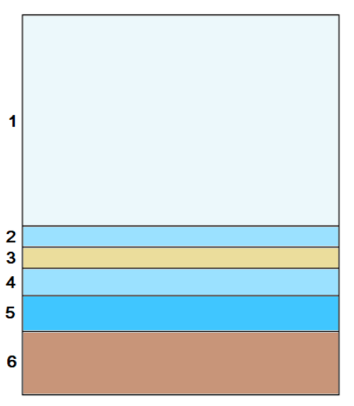
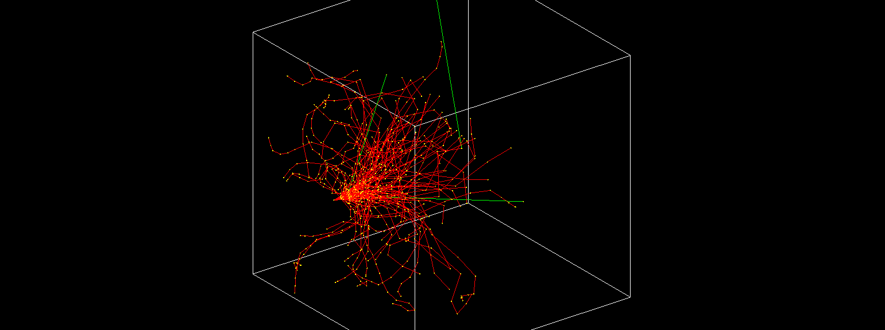
يشبه إعدادنا الهندسي ذلك المستخدم في [19]. يوضح الشكل 1 النموذج الذي شيدناه لمحاكاة المريخ. وتعرض تراكيب الغلاف الجوي والثرى المريخيين المعتمدة في محاكاتنا في الجدولين 1 و2، على التوالي. استخدمنا في الحالة الأولى بيانات Martian Fact Sheet [80]، وفي الحالة الثانية تعريف نموذج OLTARIS [44]. وضبط نموذجنا لحساب الإشعاع عند نحو 4 km تحت متوسط سطح المريخ، وهو العمق الذي يوجد عنده جهاز RAD. وبهذه الطريقة تمكنا من مقارنة نتائجنا والتحقق منها.
عالم المحاكاة لدينا، كما يسمى في توثيق Geant4، هو صندوق مكعب يتكون من 6 طبقات متتالية. وتعد كل طبقة متجانسة في تركيبها وكثافتها. في البداية، تعرف طبقة من الغلاف الجوي المكثف بسماكة 10 m. وقد أعدنا قياس الحجم الحقيقي (نحو 100 km) للطبقة الجوية عبر ضغطها وإسناد كثافتها تبعا لذلك، بحيث تبقى سماكتها الخطية ثابتة. والطبقة الثانية في عالم المحاكاة هي أيضا طبقة جوية، لكنها الآن بكثافتها العادية وبطول أعظمي قدره 2 m. وعلى الرغم من أن رائد الفضاء سيحتاج واقعيا إلى ضغط هواء أرضي في مسكنه، فإن هذه الطبقة الرقيقة لا تهم كثيرا عند الضغط المريخي. وتأتي بعد ذلك مادة التدريع المختبرة، تليها طبقة أخرى من غلاف السطح الجوي تمثل الغلاف الجوي داخل المسكن. والطبقة الخامسة لوح ماء يمثل رائد فضاء موجودا داخل مسكن على المريخ. وتغلق صندوق المحاكاة طبقة أخيرة من الثرى (بسماكة 3 m)، تعمل كمجمع للجسيمات التي لم تمتص أو تنعكس في الطبقات السابقة. ويلخص الجدول 3 مواصفات كل طبقة.
بهذه الطريقة، يمثل المريخ كسلسلة من طبقات ماصة تمتد من أعلى غلافه الجوي (نحو 100 km فوق متوسط الارتفاع الصفري) حتى بضعة أمتار تحت سطحه. وتمثل الطبقة 3، كما وصفت أعلاه، سقف مسكن. ونختبر عدة مواد محتملة قد يبنى منها هذا السقف، كما نغير السماكات المقابلة لها، لمعرفة كيفية استجابة الإشعاع لأطوال مختلفة من الدرع. أما بالنسبة للشبح البشري، فنستخدم لوح الماء، لأن النسيج المتوسط يتكون في معظمه تقريبا من الماء. والأبعاد اليسرى لعالم المحاكاة (x وy) كبيرة بما يكفي لتجنب هروب الجسيمات، وهو ما قد يخفض الجرعات المحسوبة على نحو زائف. وتحصر كل الجسيمات، بما في ذلك بروتونات الارتداد، داخل عالم المحاكاة (أما الأيونات الأخرى فلا تتأثر كثيرا على أي حال بسبب معدل إيقافها الأعلى، ).
نقر بأن الهندسة المعتمدة مبسطة إلى حد كبير. فعلى سبيل المثال، كان بإمكاننا تعريف طبقات جوية متعددة لمراعاة تغيرات الكثافة ودرجة الحرارة مع الارتفاع. إلا أن إعداد نموذج بالغ التفصيل للمريخ يتجاوز نطاق هذه الدراسة، إذ إن هدفنا هو التمييز نوعيا بين المواد وفقا لخصائصها التدريعية. ولهذا الغرض، يكفي نموذج مثل الذي اعتمدناه.
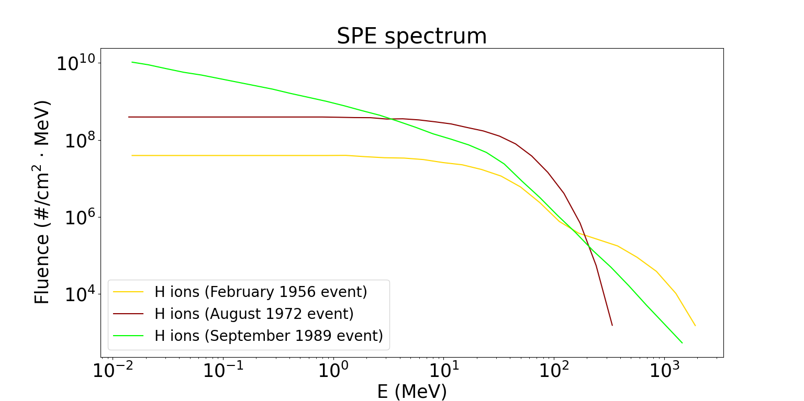
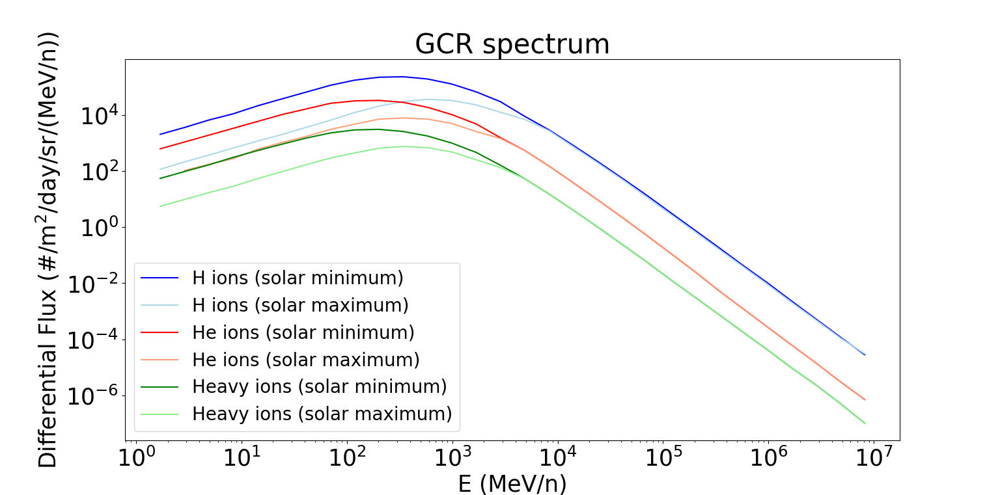
4.2 الجسيمات الأولية
كما ذكر سابقا، ثبت أن نموذج Geant4 يحاكي أطياف الجسيمات على سطح المريخ بدقة كافية للعديد من الجسيمات، مثل البروتونات أو جسيمات ألفا أو الأيونات الثقيلة، كما تحقق من ذلك جهاز MSL RAD [44]. غير أن النتائج المتعلقة بأنواع أخرى من الجسيمات، مثل النيوترونات، ليست قريبة إلى هذا الحد.
نختار مقارنة قدرة الإيقاف لتيار من جسيمات كثيرة بدلا من سلوك مادة ما إزاء جسيم واحد فقط. وبهذه الطريقة، نضمن ألا تؤثر أي تفاعلات عشوائية بين المادة والجسيم في الأثر الصافي للتدريع، بل يؤخذ متوسط السلوك الاعتباطي كله. وبصورة أدق، تصطدم بالنموذج من الأعلى حزمة شبه قلمية (التوزيع الزاوي هو 0.003∘) تتكون من 1,000,000 جسيم أولي لـ SPEs و100,000 جسيم لـ GCR. يتناسب الخطأ الإحصائي للمحاكاة مع ، حيث N هو عدد الجسيمات (الأولية وتلك التي تصل إلى الأعماق محل السؤال)، ومن ثم فإن الخطأ في النتائج يقارب 0.1-0.3%، مما يتيح لنا استنتاجات متينة. ويولد مصدر نقطي تدفقا من الجسيمات الأولية موجها إلى أسفل، وكما يظهر في الشكل 2، تغطي الأشعة تدريجيا عالم المحاكاة كله وتنتقل في كل اتجاه، عابرة مسارات متنوعة خلال الطبقات، مع تضمين جسيمات الألبيدو أيضا (ومن ثم تجمع الجرعات وتحسب مع مراعاة طبقة الماء بأكملها). وكان سبب هذا الاختيار هو تقليل هروب الجسيمات إلى خارج عالم المحاكاة؛ ولهذا السبب اختبرت حزمة ابتدائية غير متساوية الخواص، إضافة إلى أسباب متصلة بأزمنة الحساب.
نحلل استجابة مواد التدريع للإشعاع الكوني القادم من كلا المصدرين، كما عرفا في القسم 2.1 (SPEs وGCR). في الحالة الأولى، نستخدم ثلاثة أحداث شمسية تاريخية كبرى بوصفها ممثلة: فبراير 1956، وأغسطس 1972، وسبتمبر 1989. وبما أن الثورات الشمسية تبدي اختلافات ملحوظة فيما بينها من حيث الشدة والوفرة والتركيب والمدة، فإن أحداث إدخال مختلفة منها مطلوبة لدراسة أثرها على نحو أفضل. يوضح الشكل 3 طيف الطاقة للبروتونات الشمسية الناتجة عن هذه الأحداث الثلاثة. حصل على البيانات [15] وصححت وفقا لاعتماد 1/r2 لفلوينس SPE (إذ قسمت على 1.52). ومن ناحية أخرى، يستخدم نموذج Badhwar-O’Neil 2010 ([56]) للحصول على طيف GCR الخلفي. وتؤخذ البروتونات وجسيمات ألفا ونوى الحديد (بديلا للجسيمات الأثقل) في الحسبان. وقد اختيرت هذه الجسيمات بناء على هيمنتها في تركيب GCR وأثرها المهم في الجرعة الإشعاعية. إن تضمين الطيف الكامل لجسيمات GCR سيزيد تعقيد المحاكاة وعبئها الحاسوبي كثيرا. واستخدام الحديد ممثلا للأنواع الثقيلة يوفر زمنا وموارد حاسوبية، مما يجعل التحليل قابلا للتنفيذ من دون إرهاق القدرة الحاسوبية. ويظهر طيف GCR الأولي المستخدم في محاكاتنا في الشكل 4.
5 النتائج
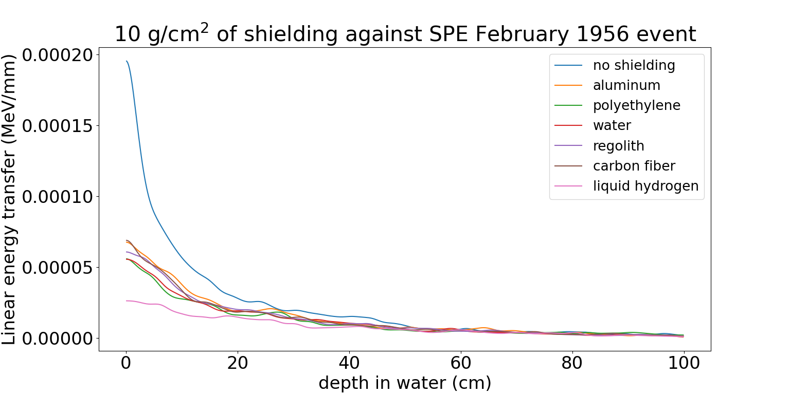
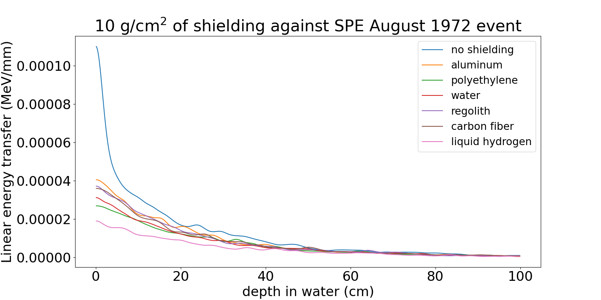
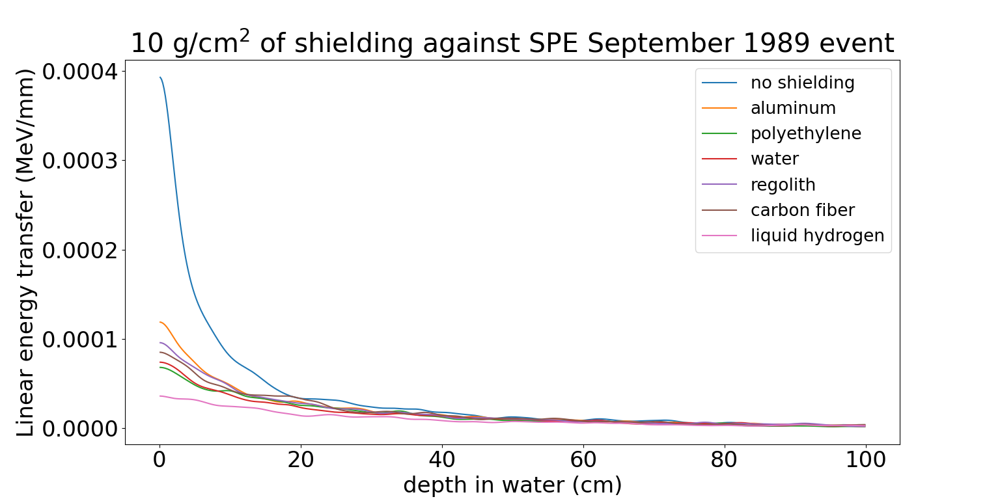
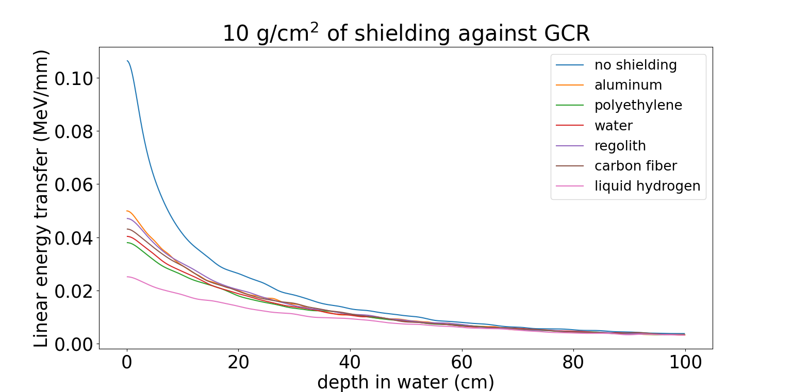
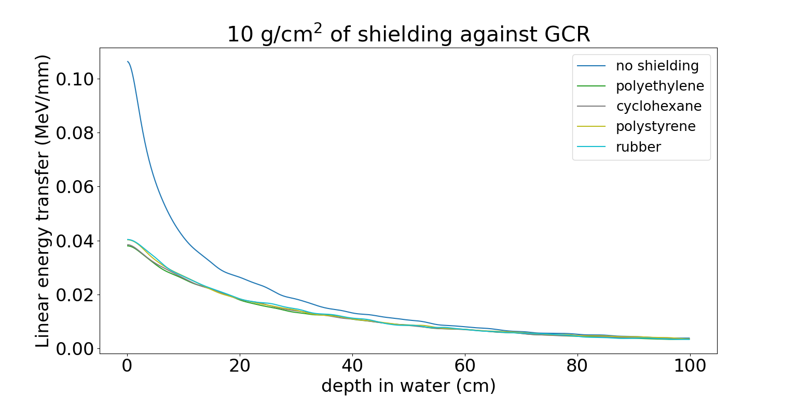
كخطوة أولى، شغلنا الحالة الأساسية لمحاكاتنا، أي الحالة من دون أي مادة تدريع. ومن ثم استطاع الإشعاع الانتقال بحرية عبر الطبقات الجوية قبل بلوغ الطبقة التي تمثل جسم رائد الفضاء، محاكيا الظروف الفعلية والتدريع الطبيعي للمريخ. وتراوح معدل الجرعة الناتج، والمستحث بواسطة GCR، في نموذجنا بين 172.8 Gy/day (ظروف الحد الأقصى الشمسي) و296.7 Gy/day (ظروف الحد الأدنى الشمسي). وهذه القيم متسقة تماما مع قياسات RAD في الكاشف البلاستيكي، التي تقع في المجال 200 - 325 Gy/day منذ هبوط MSL حتى أواخر 2020 [29]. وهذا الاتساق مشجع على نحو خاص بالنظر إلى بساطة النموذج الذي بنيناه، ويبين أن مخرجاتنا ينبغي أن تكون متوافقة مع مخرجات أخرى مستنتجة من نماذج أشد تعقيدا بكثير.
نواصل بفحص أثر مواد التدريع. والكمية التي نحسبها للمقارنة من الرتبة الأولى بينها هي الطاقة المترسبة لكل عمق (LET) مقابل العمق في طبقة الماء (وسيرد تصنيف أدق لاحقا باستخدام معدلات الجرعة الناتجة لكل مادة). وعلى الرغم من أن تعريف LET يشير عادة إلى مصدر أحادي الأيونات وأحادي الطاقة، فإننا نعمم حسابه في هذا البحث بحيث يحسب عند عمق معين بدمج الفقد التفاضلي للطاقة لكل الجسيمات عبر طيف الطاقة. وبينما تظهر الجسيمات الفردية سلوك ذروة Bragg، يمكن أن ينخفض LET المتوسط على الطيف مع العمق بسبب الآثار التراكمية لجميع الجسيمات، بما في ذلك تلك التي سبق أن أودعت طاقتها وتوقفت.
تظهر علاقة LET بالعمق في طبقة الماء، الناجمة عن ثلاثة أحداث شمسية نموذجية، في الأشكال 5 و6 و7 لبعض المواد المحددة، الشائعة الاستخدام أو المقترحة في مجال الفضاء الجوي. والمواد المختبرة هي الألومنيوم، والبولي إيثيلين، والماء، والثرى، وألياف الكربون، والهيدروجين السائل، وقد أعطيت السماكة المساحية نفسها، 10 g cm-2. وبهذه الطريقة نفحص مدى فائدة مادة ما ضد الأشعة الكونية، مع مراعاة كفاءتها الوزنية في الوقت نفسه، إذ إن كل الحالات المحاكاة ستكون لها الكتلة نفسها. وللمقارنة، تعرض أيضا الحالة من دون مادة تدريع. وفي الشكل 8، يعرض سلوك المواد نفسها تجاه الطيف الكامل لـ GCR (البروتونات وجسيمات ألفا وأيونات الهيليوم) أثناء ظروف الحد الأدنى الشمسي (بوصفها أسوأ سيناريو).
| Material | Dose rate (Gy/day) |
|---|---|
| no shielding | 296.7 |
| aluminum | 214.3 |
| regolith | 212.6 |
| BN | 212.6 |
| beryllium | 212.6 |
| SiO2 | 209.3 |
| carbon fiber | 207.7 |
| ETFE | 207.7 |
| Mylar | 204.4 |
| rubber | 201.1 |
| Kevlar | 201.1 |
| water | 199.4 |
| PMMA | 199.4 |
| polystyrene | 199.4 |
| LiH | 196.1 |
| cyclohexane | 194.5 |
| polethylene | 192.9 |
| LiBH4 | 189.6 |
| liquid hydrogen | 152.0 |
| Material | 10 g cm-2 material | 5 g cm-2 material, 5 g cm-2 regolith |
|---|---|---|
| aluminum | 214.3 | 215.9 |
| carbon fiber | 207.7 | 212.6 |
| water | 199.4 | 204.4 |
| polyethylene | 192.9 | 201.1 |
| Material | 10 g cm-2 material | 5 g cm-2 material, 5 g cm-2 aluminum |
|---|---|---|
| carbon fiber | 207.7 | 214.3 |
| regolith | 212.6 | 212.6 |
| water | 199.4 | 206.0 |
| polyethylene | 192.9 | 202.7 |
الطاقات المترسبة أدنى بالتأكيد في المخططات المستحثة بـ SPE منها في المخططات المستحثة بـ GCR، لأن الأخيرة تتميز بطيف أصلب بكثير (مع أننا نلاحظ أن للجسيمات الأبطأ أثرا ضارا أعلى، كما أشرنا سابقا). وعلى الرغم من الطاقات المنخفضة، يمكن استنتاج بعض النتائج الأساسية. فعلى سبيل المثال، يبدو الألومنيوم في جميع الحالات أسوأ مواد التدريع بين المواد المختبرة، في حين يحافظ الهيدروجين السائل فعلا على مستويات التعرض عند أدنى المستويات، كما هو متوقع من المعادلة (1). ولا تلاحظ إلا فروق طفيفة في استجابة المواد تجاه كل واحد من الأحداث الشمسية الثلاثة المختلفة. وبعد ذلك نركز على جسيمات GCR، التي تشكل الحقل الرئيس على المريخ، كما أوضحنا في القسم 2.2.
نلاحظ أن النتائج الخاصة بأيونات GCR (الشكل 8) متوافقة مع تلك المرتبطة بـ SPEs في الأشكال 5-7. ومرة أخرى، يظهر الهيدروجين السائل بوصفه أفضل مخفف، إذ يخفض الجرعات الممتصة تقريبا إلى النصف مقارنة بالمواد الأخرى. أما بقية المواد فتظهر سلوكا متوسطا، إذ تخفض الإشعاع إلى نحو ثلث حالة عدم وجود أي تدريع. وتتفق نتائجنا مع [58, 22]، الذي يحاكي أيضا أداء التدريع السلبي في الحقل المريخي. وبترتيب انخفاض الطاقة، تصنف المواد على النحو الآتي: الهيدروجين السائل، البولي إيثيلين، الماء، ألياف الكربون، الثرى، الألومنيوم. وحتى الفروق بين منحنيات المواد المحاكاة في الشكل 8 تكاد تكون مطابقة للفروق المقابلة في مخططات الشكل 3 لدى [58]. وكما ذكر أعلاه، يبلغ الخطأ الإحصائي في المحاكاة نحو 0.3%، ولذلك يمكننا أن نفترض بثقة أن هذه الانحرافات (بحد أدنى 1-2%) لا تنتج من الطبيعة العشوائية لحسابات مونت كارلو، بل توضح السلوك الخاص لكل مادة تجاه الإشعاع.
ننتقل الآن إلى أداء الثرى. كما ذكر، يمكن أن يساعد الثرى بدرجة كبيرة في أغراض التدريع الإشعاعي، إذ سيخفض الحمولة المطلوبة. ومن ثم، يعد تقييم المدى الذي يمكن أن يحقق فيه الثرى المريخي هذا الغرض قضية مهمة. وتشير نتائجنا إلى أن سلوكه تجاه الجسيمات المشحونة مشابه لسلوك الألومنيوم (وهو أكثر فعالية قليلا). ونذكر بأن السماكة نفسها بوحدة g cm-2 تحاكى هنا. وتدعم هذه النتيجة أيضا نتائج تجريبية لثرى القمر [42]، الذي له تركيب مشابه للثرى المريخي. وتخفض مواد أخرى، مثل المواد المعتمدة على الهيدروجين، الجرعات الممتصة أكثر، لكن الفرق صغير فقط (وإن كان أكبر بالتأكيد من اللايقينات الإحصائية). وبناء على ذلك، يصنف الثرى مادة فعالة نسبيا إلى حد لا بأس به ضد SPEs وGCR. وتستنتج دراسات سابقة نتائج مماثلة. وعلى وجه الخصوص، يخلص [47, 58, 13] إلى أن 1 m من تدريع الثرى يوفر حماية كافية، لكن زيادة السماكة تخفف الإشعاع على نحو أكثر تدرجا؛ ولإبقاء الجرعة الفعالة دون حدود السلامة تلزم أكثر من 3 m من الثرى. ويقترح [38] مزج الثرى مع إيبوكسي الغرافيت، بسبب المركبات الهيدروجينية التي يحتوي عليها الإيبوكسي.
يمكن العثور على مقارنة كمية لآثار التدريع لكل مادة في الجدول 4، حيث نعرض معدلات الجرعة المستحثة بـ GCR (ظروف الحد الأدنى الشمسي) (انظر الملحق) في طبقة الماء (تحسب الجرعات من إجمالي الطاقة المترسبة في هذا اللوح). وكما ذكر أعلاه، فإن الجرعات الناتجة للمواد المعتمدة على الهيدروجين قريبة جدا بعضها من بعض، في حين يؤدي تدريع الهيدروجين السائل إلى أدنى جرعة بفارق واضح (51% من الجرعة من دون تدريع سلبي).
نفحص كذلك أداء بعض المواد المشابهة للبولي إيثيلين. وعلى وجه الدقة، فإن هذه المواد المكونة من الكربون والهيدروجين فقط هي: البولي إيثيلين عالي الكثافة ((C2H4)n)، والسيكلوهكسان (C6H12)، والبوليسترين ((C8H8)n)، وستايرين بوتادايين (C20H22)n)، بوصفها عائلة نموذجية من المطاط. ويمكن أن تكون جميع هذه المواد مفيدة في بعثات الفضاء الجوي بسبب خصائصها وخفتها. فعلى سبيل المثال، يعد البولي إيثيلين والبوليسترين من أكثر أنواع البلاستيك استخداما. وتعرض مخططاتها في الشكل 9. ونستنتج أنها تستجيب للإشعاع على نحو شبه متماثل، مع ملاحظة فروق صغيرة. وهذا متوقع بالطبع بسبب هويتها الكيميائية المتناظرة. وكما يستدل من الجدول 4، توجد زيادة طفيفة في معدل الجرعة مع ارتفاع عدد ذرات الكربون؛ ومن ثم، وبترتيب زيادة ترسيب الجرعة، تصنف المواد على النحو الآتي: البولي إيثيلين، السيكلوهكسان، البوليسترين، وأخيرا المطاط.
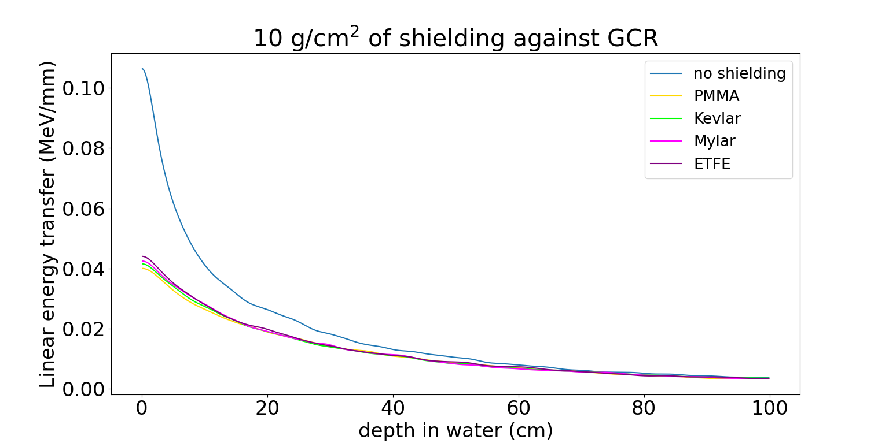
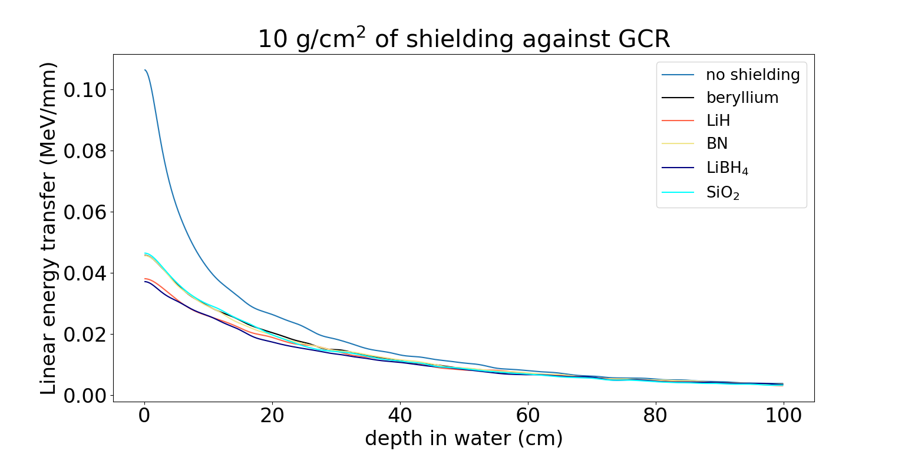
يوضح الشكل 10 مقارنة لخصائص التدريع بين مركبات عضوية قائمة مرة أخرى على الهيدروجين، لكنها مدمجة مع عناصر أخرى مثل النيتروجين والأكسجين والفلور. نختبر PMMA ((C5O2H8)n)، وKevlar (C14H14N2O4)n)، وMylar (C10H8O4)n)، وETFE (C4H4F4)n). وتظهر المخططات ومعدلات الجرعة المقابلة مرة أخرى أداء متشابها، لكن PMMA الأقل كثافة يبدو أكثر فعالية من ETFE الأكثر كثافة. وينتج Kevlar وMylar جرعات متشابهة.
كما أوضحنا في القسم 3.1، تميل المواد منخفضة الكتلة الذرية إلى أن تكون مخففات أفضل ضد أي نوع من الإشعاع. وبدافع من هذا الرأي، المدعوم بقوة بتحليلات سابقة، نحاكي سلسلة من المركبات الكيميائية المبتكرة منخفضة Z. فعلى سبيل المثال، خلصت محاكاة الفضاء العميق باستخدام أطياف GCR (مثلا [59]) أو الحزم أحادية الطاقة (مثلا [49, 66])، وكذلك التجارب (مثلا [25, 67, 42])، إلى أن المواد القائمة على Li وB وN قد تمتلك أداء واعدا ضد الإشعاع الكوني. وتعرض نتائجنا المتعلقة بـ LiH وBN وLiBH4 في الشكل 11. وفي الشكل نفسه، تعرض أيضا مخططات Be، وهو فلز منخفض الكتلة الذرية وله خواص ميكانيكية مثبتة (رغم إشكاليته بسبب سميته)، وSiO2، وهو أساس الزجاج. وتشير النتائج إلى أن LiH وLiBH4 فعالان إلى حد كبير في البيئة المريخية، وأن معدل جرعتهما قابل للمقارنة (أو حتى أدنى) مع المواد الأخرى المعتمدة على الهيدروجين. وعلى وجه الخصوص، يبدو LiBH4 أكثر فعالية قليلا من LiH، وهي نتيجة تبدو ظاهريا متعارضة مع النتائج التجريبية لدى [42]، لكن هذا التباين يحل على نحو مناسب عند النظر إلى الطيف المختلط الذي نعتمده مقارنة بحزمة الحديد أحادية الطاقة في التجارب. ومن ناحية أخرى، عند 210 Gy/day (الجدول 4)، تكون BN وBe وSiO2 مشابهة للثرى أو الألومنيوم من حيث الإشعاع (وفي الواقع، SiO2 هو المكون الرئيس للثرى).
وأخيرا، نحاكي توليفات من مواد التدريع السلبي الرئيسة. وكسيناريو أول، ننظر في مدى كفاءة تكديس الثرى فوق المسكن مقارنة بالاكتفاء بمادة المسكن وحدها. وتعرض النتائج في الشكل 12 والجدول 5. وتمثل الخطوط المتصلة في الشكل 12 10 g cm-2 من مادة ما، وتمثل الخطوط المتقطعة النقطية 5 g cm-2 من الثرى متبوعة بـ 5 g cm-2 من المادة. ونرى أن التوليفات مع الثرى أقل فائدة ضد الجسيمات المشحونة. ومع ذلك، فإنها ما تزال تخفض الإشعاع الوارد إلى حد ملحوظ، والفروق بين الخطوط المتصلة والمتقطعة النقطية في الشكل 12 صغيرة فقط ( 0.1 MeV/mm)، وتتضح أساسا عند الأعماق الضحلة (كما هو متوقع بسبب اختلاف قدرات الإيقاف). وخصائص الثرى قابلة للمقارنة فعليا مع خصائص الألومنيوم، مما يعني أن المخطط المتحصل عليه من التسلسل 5 g cm-2 من الثرى والألومنيوم مشابه تماما لذلك الناتج من 10 g cm-2 من الألومنيوم. وهذا تأكيد آخر للأداء المتشابه بين الثرى والألومنيوم. وتدعم معدلات الجرعة في الجدول 5 هذه الاعتبارات النوعية أيضا، إذ تبين أن توليفات الثرى تسمح بمعدلات جرعة أكبر قليلا.
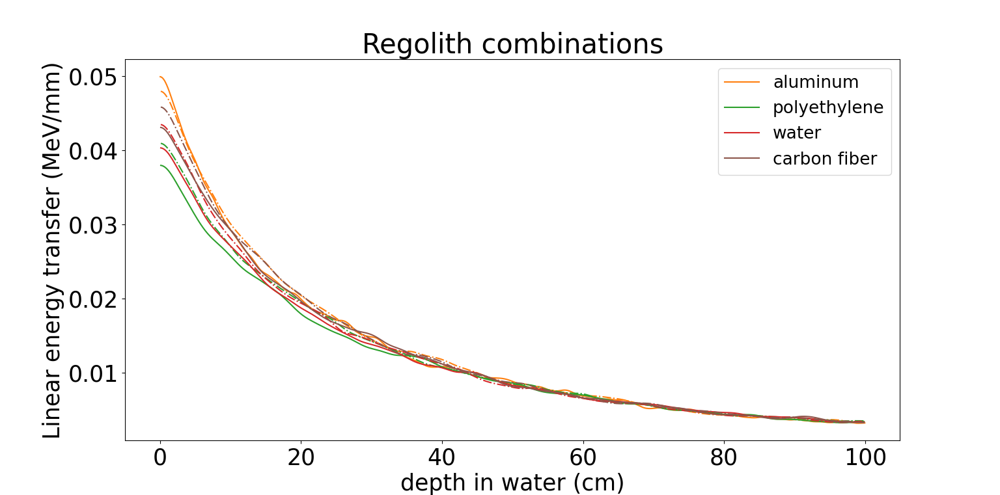
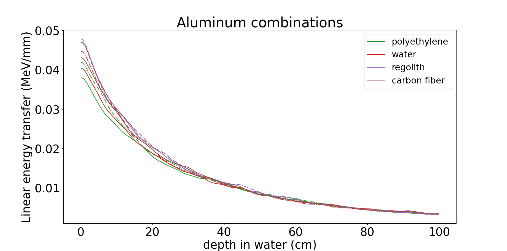
بعد ذلك، نجري محاكاة مماثلة لتوليفات الألومنيوم (الشكل 13 والجدول 6). ويكمن سبب هذه الخيارات في أن معظم أجزاء المركبات الفضائية تصنع حاليا من الألومنيوم؛ ومن ثم فإن أداءه ضد الإشعاع الكوني ذو أهمية ملحوظة. وتشير مخططات الشكل 13 إلى أن البولي إيثيلين والماء وألياف الكربون تخفف جرعات الإشعاع منفردة بفعالية أكبر مما تفعل عند استبدال جزء منها بالألومنيوم ذي الوزن نفسه. وتظهر 5 g cm-2 من الثرى متبوعة بـ 5 g cm-2 من الألومنيوم سلوكا شبه مطابق لترسيب الطاقة بواسطة 10 g cm-2 من الثرى، كما ذكر أعلاه. غير أنه يجب أن نذكر أنه رغم أن خصائص الألومنيوم تؤدي إلى جرعات أعلى قليلا، فإن الاختلافات مع المواد المختلفة ليست كبيرة بما يكفي لاستبعاد الألومنيوم من مواد التدريع المناسبة. وعلى العكس، نقترح الاستفادة من توليفات الألومنيوم مع مواد أخرى من أجل خفض جرعات الإشعاع، كما يوحي الشكل 13 والقيم في الجدول 6.
المواد المركبة هي مستقبل التدريع السلبي من الإشعاع في الفضاء. وبعيدا عن الهيدروجين، يمكن لعناصر كيميائية أخرى أن تؤدي دور أساس لتوليف مواد فعالة ضد الإشعاع. والليثيوم مثال نموذجي. ويمكن إضافتها ضمن توليفات الألومنيوم والثرى الموثوقة، وتشكيل مواد تفي بأي استخدام مطلوب مع الحفاظ على الجرعات عند مستويات منخفضة.
وباختصار، تشير النتائج إلى أن خفض الجرعة دالة في معاملات كثيرة. وبافتراض الإشعاع الساقط نفسه (مثل طيف GCR، كما درس هنا)، يؤدي تركيب كل مادة وخواصها أدوارا حاسمة. وبينما تعد الكثافة مهمة (فعلى سبيل المثال، تميل المواد عالية الكثافة إلى زيادة احتمال التفاعلات النووية المعززة لعملية التشظي)، فإن العوامل الرئيسة المؤثرة في فعالية التدريع هي الوزن الذري (الذي يؤثر في مقطع التشظي النووي) ونسبة العدد الذري إلى الوزن الذري كما تستنتج من معادلة Bethe. وتميل المواد ذات الأوزان الذرية الكبيرة والقائمة على ذرات منخفضة Z إلى أن تكون دروعا أفضل، كما هو متوقع من المعادلة (1). ويفسر اختلاف تركيب المواد (الحد ) سبب إظهار المواد المتشابهة فروقا صغيرة من حيث خصائص التدريع. والطاقة التي يفقدها جسيم أثناء عبوره المادة ترجع أساسا إلى كثافة الإلكترونات. وفي نهاية المطاف، تفرض قيود الحمولة أثناء البعثات إلى المريخ النظر في مواد أخف.
6 المناقشة
على الرغم من بساطة نموذجنا، فقد تبين أنه يقدم محاكاة كافية لظروف الإشعاع على المريخ. ونبين أن نتائجنا متوافقة مع نتائج منشورة بالفعل، سواء باستعمال نماذج بديلة وأكثر تعقيدا أو مع القياسات الفعلية بواسطة جهاز RAD على متن الجوال Curiosity. ولذلك نستنتج أن النتائج الموضحة أعلاه، الآتية من المخرجات الحاسوبية، تتمتع بدرجة عالية من الثقة.
إضافة إلى ذلك، نلاحظ أن استنتاجاتنا الرئيسة بشأن كفاءة المواد المختلفة تتسق عادة مع ما نتوقعه من المعادلة (1)، كما أوضحنا. ومع ذلك، فإن تشغيلات Geant4 التي أجريناها مطلوبة فعلا لاستخلاص استنتاجات راسخة. فهي تأخذ في الحسبان التفاعلات المعقدة بين الجسيمات والمواد، بما في ذلك التفاعلات النووية مثل التشظي والتفتت، والعمليات الكهرومغناطيسية مثل التأين وإشعاع الفرملة، مقارنة بمعادلة Bethe-Bloch التي تقدم استجابة متوسطة ولا تكشف الدقائق الدقيقة في التفاعلات (مثل أحداث التشتت، والتفاعلات الثانوية، وزخات الجسيمات، وانحلالات الجسيمات). وإضافة إلى ذلك، يستكشف نموذجنا مدى واسعا من الطاقة وعدة تراكيب وبنى معقدة لا يمكن لصيغة معممة التقاطها.
ومع ذلك، يرتبط أحد حدود نموذجنا بالتركيز الممنوح أساسا للإشعاع المؤين. ففي حين أظهر نموذج Geant4 المستخدم في هذه الدراسة دقة في محاكاة أطياف الجسيمات لمختلف الأيونات، فإن أداءه فيما يتعلق بالإشعاع غير المؤين، ولا سيما النيوترونات، ما يزال تحديا، كما أشارت إليه الفروق عند المقارنة بنتائج جهاز MSL RAD (على الرغم من أن جسيمات الألبيدو تؤخذ عادة في الحسبان). وقد تدخل هذه الحدود لا دقة محتملة في نتائجنا، ولا سيما فيما يتعلق بنيوترونات الألبيدو والنيوترونات الثانوية منخفضة الطاقة، رغم أنه لا يتوقع أن تؤثر بوضوح في الاستنتاجات العامة المستخلصة من دراستنا، مثل اختيار المواد. ومن المسلم به أن النيوترونات تسهم إسهاما مهما في البيئة الإشعاعية على المريخ [16]، وأن تفاعلاتها مع مواد التدريع تستحق دراسة دقيقة. ويمكن تخفيف هذه القضايا باستخدام قوائم فيزيائية متخصصة مثل نماذج High Precision (HP)، ومقاربات هجينة تجمع Geant4 مع شيفرات خاصة بالنيوترونات مثل MCNPX، والتحقق من المحاكاة بالبيانات التجريبية. وينبغي أن تهدف النسخ المستقبلية من النموذج إلى تنقيح محاكاة تفاعلات النيوترونات.
نناقش الآن معاملات أخرى يمكن أن تؤثر في النتائج. أولا، يمكن أن تتغير درجة حرارة المريخ عند خط الاستواء من -113∘ C أثناء الليل إلى 17∘ C أثناء النهار [8]. وإضافة إلى ذلك، يختبر الغلاف الجوي مدا حراريا بفعل حرارة الشمس على جانب النهار وتبريدا بالأشعة تحت الحمراء على جانب الليل. غير أن آثارها في جرعات الإشعاع ينبغي أن تكون صغيرة مقارنة بعوامل أخرى مثل التضمين الشمسي، وفقا لـ [27]. لذلك لا ندرس أي تغيرات في الجرعة الممتصة بالنسبة إلى درجة الحرارة.
ومن الجدير بالذكر أيضا أن عبور الأشعة الكونية للمواد له أثر مهم في طبيعة المواد. والأمثلة الأكثر تميزا هي حساسية المعدات الإلكترونية لأي نوع من الإشعاع، وبالطبع الأثر الضار للأشعة في الأعضاء البشرية، الذي يؤدي إلى نشوء أمراض مثل الأورام. وربما تكون دراسة معمقة لتوزيع طاقة الجسيمات المشحونة في البيئة المريخية مطلوبة لتقييم الضرر في مواد مختلفة؛ إلا أن استكشاف هذه الآثار في محاكاتنا يتجاوز نطاق هذا البحث.
قد تؤثر خواص الثرى المتغيرة في قراراتنا المتعلقة بمكان وضع مسكن بشري على المريخ أيضا. فعلى سبيل المثال، استمدت قيمة كثافته في الأدبيات من قياسات العطالة الحرارية، أو على نحو غير مباشر من قياسات الجوالات أو من افتراضات بشأن كثافة الحبيبات والفراغات المسامية، وهناك مدى كامل من القيم التي يمكن نسبتها إلى كثافة الثرى. ويمكن أن يتغير تركيب الثرى المريخي نفسه أيضا؛ فبالقرب من قطبي الكوكب يوجد الثرى في اتحاد مع الماء والجليد، في حين يتكون بالقرب من خط الاستواء غالبا من السيليكون. وبعبارة أخرى، لا يمكننا اعتماد نموذج تركيب واحد، إذ تعتمد خصائص الثرى بقوة على الموقع. ومع ذلك، وعلى الرغم من أن السمات الدقيقة للثرى قد تتغير قليلا، فقد تبين في دراسات سابقة عن الثرى المريخي [38] وعن ثرى القمر، القابل للمقارنة بالمريخي [52, 51]، أن التغيرات الصغيرة لا تؤثر بوضوح في خصائص التدريع. وتمتلك كل المجموعات الفرعية للتربة المريخية أساسا الحماية التدريعية نفسها، ومن ثم يمكن إجراء تحليلات الموارد الموجودة في الموقع المستخدمة للحماية من الإشعاع على نحو معقول باستخدام نموذج واحد للثرى المريخي. ويدعم هذا الرأي أيضا محاكاة اختبارية أجريناها بتراكيب ثرى مختلفة قليلا.
من الاعتبارات العملية سهولة تنفيذ مواد التدريع المختلفة. فإضافة بضعة سنتيمترات من مادة تدريع يمكن أن يكون عاملا حاسما في تصميم استراتيجيات فعالة للحماية من الإشعاع. فعلى سبيل المثال، تضيف محاكاتنا دليلا على أن الثرى المريخي، بخصائصه التدريعية المتأصلة، قد يقدم حلا عمليا بسبب توافره على سطح الكوكب. وتشير الفروق الصغيرة نسبيا في فعالية التدريع بين المواد، كما تبينها نتائجنا، إلى أن اختيار مادة التدريع قد يسترشد بعوامل مثل سهولة النقل والبناء والقابلية للتكيف مع البيئة المريخية. وينبغي أن يكون قرار مادة التدريع متعدد الأبعاد، آخذا في الحسبان ليس فقط قدرات تخفيف الإشعاع بل أيضا الجوانب العملية للتنفيذ.
وعند النظر في الآثار العملية لمحاكاتنا، يستحق تأثير سماكة التدريع المختارة 10 g cm-2 نقاشا أيضا. فبينما تمثل متطلبات تدريع نموذجية، قد تحجب الدروع الأثخن، مثل 20 أو 30 g/cm²، الآثار المبلغ عنها، في حين قد تضخم الدروع الأرَقّ فروق المواد. ويعتمد سبب آخر لاختيار السماكة 10 g cm-2 على تحقيق توازن بين الواقعية وإمكان التنفيذ الحاسوبي. وينبغي أن تستكشف نسخ النموذج المستقبلية سماكات مختلفة للتحقق من الاستنتاجات وتعزيز قابليتها للتطبيق في سيناريوهات مريخية، مع إدراك اللايقين المتأصل الذي يدخله اختيار السماكة.
وأخيرا، نلاحظ أن النقاش حول الفعالية الحقيقية لمواد التدريع السلبي في الفضاء سيصبح أكثر رسوخا ما إن تقارن التجارب بالنماذج. فعلى سبيل المثال، أجرى [68] تجارب على البولي إيثيلين في غلاف جوي مريخي محاكى، وفحص تصنيع مواد مركبة قائمة على الثرى المريخي باستخدام البولي إيثيلين مادة رابطة. ولا محالة، يقوم كل نموذج شيفري ضمنيا بعدد من التبسيطات الضرورية للظروف الفعلية لبيئة ما، بهدف إبقاء أزمنة المحاكاة قابلة للإدارة. لذلك يبقى من الممكن دائما أن تكون بعض الاستنتاجات النظرية سابقة لأوانها أو مفرطة التأويل إلى حد ما. وينبغي أن يلقي العمل المستقبلي مزيدا من الضوء على هذا المجال.
7 الملخص والاستنتاجات
تمثل الحماية من الإشعاع أولوية قصوى عند التخطيط للبعثات الطويلة الأمد في الفضاء الخارجي. وعلى المريخ خاصة، تعد حماية رواد الفضاء من الأشعة الكونية الخطرة ضرورة مطلقة بسبب القصف المستمر بالأشعة الكونية المجرية طوال مدة البعثة. ويلزم مزيج من القياسات وحسابات النماذج في سياق المريخ لفهم الآثار الإشعاعية في صحة الإنسان فهما كاملا. إضافة إلى ذلك، فإن تحسين استراتيجيات تخفيف الإشعاع والتحقق منها أمر أساسي تماما للتحضير لأي رحلة بشرية إلى الكوكب الأحمر.
هناك جهد مستمر لإيجاد مواد مناسبة لحماية رواد الفضاء من الإشعاع في بيئات الفضاء العميق، كما في الرحلات البشرية المخطط لها إلى المريخ. وبالمثل، أتاحت لنا قياسات MSL RAD تطوير نماذج شيفرية للبيئة الإشعاعية المريخية والتحقق من النتائج المتحصل عليها. غير أن هناك نقصا في الأدبيات في الجمع بين هذين الجهدين، أي تحديد سلوك مواد التدريع السلبي تحديدا في حقل الإشعاع المريخي. وتهدف هذه الدراسة إلى تلبية تلك الحاجة. فقد فحصنا عددا من المواد في البيئة المريخية وفقا لخصائص تدريعها السلبي، مستخدمين GCR وبعض SPEs النموذجية كأطياف إدخال. وبعيدا عن المواد الأكثر استخداما في المركبات والبعثات الفضائية حتى الآن، اختبرنا أيضا مجموعة من المواد المبتكرة التي لم تحلل سابقا بدقة من حيث خصائصها الإشعاعية أو تنظر إليها خيارا على المريخ تحديدا. وكخطوة تالية، انتقلنا إلى محاكاة توليفات المواد مع الألومنيوم الشائع والثرى المريخي المحتمل الفائدة.
ولهذا الغرض، طورنا نموذجا للمريخ باستخدام حزمة أدوات Geant4، حيث مثل الكوكب بسلسلة من طبقات ماصة (الغلاف الجوي، مادة التدريع، الماء بديلا للإنسان، والتربة). ولقياس دقة نموذجنا، فحصنا أي مصادر للخطأ وقارنا معدلات الجرعة الناتجة بالقيم المقابلة لدى RAD، فوجدنا اتساقا معنويا. ونتيجة لذلك، وعلى الرغم من أن نموذج الصفائح المستوية هذا يمتلك تكوينا هندسيا أبسط بكثير مقارنة بنماذج منشورة أخرى مستخدمة، يمكننا أن نجادل بثقة في أن نموذجنا يستطيع مع ذلك أن يقدم لنا إجابات قيمة لمشكلتنا البحثية. إن وجود نموذج إضافي موثوق وبسيط للإشعاع على المريخ، يمكن تشغيله ضمن أزمنة حسابية معقولة، أمر ذو قيمة كبيرة لمهمة صعبة ومعقدة مثل حماية رواد الفضاء هناك من الإشعاع الكوني الخطر.
ينبغي للمواد المثلى لأغراض التدريع من الإشعاع الفضائي أن توفر قدرة إيقاف فعالة وتشظيا نوويا في آن واحد. وتشير محاكاتنا إلى أنه كلما ازدادت غنى المادة بالهيدروجين زادت الطاقة التي تمتصها. غير أن هذا ليس سوى واحد من المعاملات التي تحدد كفاءة مادة ما ضد الأشعة الكونية، ومن المعاملات البارزة الأخرى وفرة العناصر منخفضة العدد الذري. والمادة الأكثر شيوعا في مجال الفضاء الجوي، أي الألومنيوم، ليست بفعالية الماء أو البلاستيك أو المركبات القائمة على Li، لكنه مع ذلك يخفض جزءا مهما من الإشعاع الوارد. ووجدنا أن المركبات القائمة على الهيدروجين والكربون تبدي سلوكا متناظرا تجاه الأشعة الكونية، في حين أن المواد المصنوعة من B أو N ليست مفيدة بالقدر نفسه. وأخيرا، نقترح توليفات الثرى خيارا بديلا لأغراض التدريع، بغية إبقاء متطلبات كتلة الإطلاق ضمن حدود معقولة، على الرغم من أن استجابة الثرى للجسيمات المشحونة وعالية الطاقة ليست مثالية، لكنها كافية إلى حد مقبول.
إن الدراسة المتعمقة للبيئة الإشعاعية على المريخ ضرورية للغاية لتخطيط بعثات بشرية ناجحة هناك وتنفيذها. وتتمثل المقاربة الهندسية في إعداد كل الأنظمة لأسوأ سيناريو، ولذلك ينبغي إنجاز مزيد من العمل في مجال الإشعاع الفضائي. وإلى جانب الأهمية الواضحة لهذا النوع من البحوث لرحلات الفضاء البشرية، نشير إلى أن دراسة حقل الإشعاع على المريخ لها آثار كثيرة في علم الأحياء الفلكي والآليات المحتملة التي ربما نشأت الحياة عبرها على الكوكب الأحمر.
الملحق
لا توجد طريقة مطلقة لحساب خطر الإشعاع. وقد أنشئت بعض الكميات الفيزيائية لتقييمه. وعادة تعتمد الطرق الثلاث الآتية لقياس الإشعاع:
-
•
الجرعة (): تعرف بأنها الطاقة الممتصة لكل كتلة، بصرف النظر عن نوع الإشعاع. وغالبا ما تقاس بوحدة السنتي-غراي ().
-
•
الجرعة المكافئة (): تمثل بالجرعة مضروبة في عامل تصحيح لمراعاة نوع الإشعاع. ووحدتها الشائعة هي السنتي-سيفرت ().
-
•
الجرعة الفعالة (): تعرف بأنها الجرعة المكافئة مضروبة في عامل يأخذ في الحسبان جزء الجسم المعرض للإشعاع.
وبصورة أدق، لكل الجسيمات ، ولكل منها طاقة ، تعطى الجرعة عند العمق بالعلاقة:
| (2) |
هي قدرة إيقاف المادة و هو تدفق الجسيمات. وبالمثل، تحسب الجرعة المكافئة بضرب العلاقة أعلاه في عامل الترجيح الموافق لنوع الجسيم، كما ذكر سابقا:
| (3) |
تحسب بواسطة الانتقال الخطي للطاقة لكل جسيم. وأخيرا، فإن الجرعة الفعالة الكلية لجسم الإنسان هي المتوسط المرجح لكل الأعضاء (يشير الرمز السفلي إلى العضو، و هو عامل الترجيح [57]):
| (4) |
ومن ثم تصحح كميات الإشعاع وفقا لعوامل مثل شدة طيف الطاقة، والتركيب، والنسيج أو الأنسجة المتأثرة. ومع ذلك، تنشأ لايقينات كثيرة عند تحديد آثار الإشعاع في رواد الفضاء. فخطر الإشعاع يتغير مثلا تبعا لجوانب أخرى مثل العمر، والجنس، والقابلية الفردية.
يدخل عامل الجودة Q بسبب أن أنواع الإشعاع المختلفة ليست خطرة بالقدر نفسه، حتى إذا أودعت الطاقة نفسها. وبالنسبة إلى مكافئ الجرعة، تعد الأشعة السينية نوع الإشعاع المرجعي، عند . وتمتلك الإلكترونات والفوتونات القيمة نفسها ، في حين تعتمد قيمة البروتونات على LET الخاص بها. ومن ناحية أخرى، تعد نوى الهيليوم أشد خطرا بكثير ()، وهي أيضا القيمة نفسها لنيوترونات 1 MeV. وتتناقص قيمة للنيوترونات عند طاقات أخرى. وبوجه عام، ترتبط الجرعة الممتصة بالطاقة التي تفقدها الجسيمات الساقطة، وإن وجدت بعض الاستثناءات لهذا السلوك.
وأخيرا، أدخل منشور ICRP رقم 60 [14] عامل جودة إشعاعيا متوسطا للتمييز بين البيئات الإشعاعية المختلفة وقياس شدتها. وتحسب بقسمة إجمالي مكافئ الجرعة على إجمالي الجرعة الممتصة.
الشكر والتقدير
يعرب المؤلفون عن امتنانهم لمحكمين مجهولين على تعليقاتهما البناءة التي حسنت هذا العمل. ونشكر أعضاء تعاون Geant4 الذين طوروا البرمجية (geant4.cern.ch) المستخدمة في هذا العمل. دعم هذا العمل من منح البحث المؤسسية في New York University Abu Dhabi (NYUAD) رقم G1502 وCG014، ومنحة ASPIRE Award for Research Excellence (AARE) رقم S1560 المقدمة من Advanced Technology Research Council (ATRC).
بيان مساهمات المؤلفين
التصور، D.G.، D.A.؛ الكتابة - إعداد المسودة الأصلية، D.G.، D.A.؛ الكتابة - المراجعة والتحرير، D.G.، D.A.. راجع جميع المؤلفين المخطوطة.
تضارب المصالح
يعلن المؤلفون أنه لا يوجد لديهم تضارب مصالح.
بيان إتاحة البيانات
تتوافر الشيفرات والبيانات التي استخدمت لإعداد نماذجنا ضمن البحث من المؤلفين المراسلين عند الطلب المعقول.
References
- [1] (1998) Magnetic field and plasma observations at Mars: Initial results of the Mars Global Surveyor mission. Science 279 (5357), pp. 1676–1680. External Links: Document Cited by: §2.2.
- [2] (2003) GEANT4—a simulation toolkit. Nuclear instruments and methods in physics research section A: Accelerators, Spectrometers, Detectors and Associated Equipment 506 (3), pp. 250–303. External Links: Document Cited by: §4.
- [3] (2016) Design of a human settlement on Mars using in-situ resources. Cited by: §3.2.
- [4] (2014) Cosmic rays and terrestrial life: a brief review. Astroparticle Physics 53, pp. 186–190. External Links: Document Cited by: §1.
- [5] (2020) Stellar proton event-induced surface radiation dose as a constraint on the habitability of terrestrial exoplanets. Monthly Notices of the Royal Astronomical Society: Letters 492 (1), pp. L28–L33. External Links: Document Cited by: §2.1.
- [6] (2004) A space radiation shielding model of the Martian radiation environment experiment (MARIE). Advances in Space Research 33 (12), pp. 2219–2221. External Links: Document Cited by: §2.2.
- [7] (2005) Specifying and forecasting space weather threats to human technology. In Effects of Space Weather on Technology Infrastructure, I. A. Daglis (Ed.), Dordrecht, pp. 1–25. Cited by: §3.2.
- [8] (1998-04) Resource Utilization and Site Selection for a Self-Sufficient Martian Outpost. Note: Technical Report, NASA/TM-98-206538; S-837; NAS 1.15:206538 Cited by: §6.
- [9] (2018) Radiation production and absorption in human spacecraft shielding systems under high charge and energy galactic cosmic rays: material medium, shielding depth, and byproduct aspects. Acta Astronautica 144, pp. 254–262. Cited by: §3.1.
- [10] (2012) Active radiation shield for space exploration missions. arXiv preprint arXiv:1209.1907. Cited by: §3.1.
- [11] (2013) The origin of galactic cosmic rays. The Astronomy and Astrophysics Review 21 (1), pp. 70. External Links: Document Cited by: §2.1.
- [12] (1999) Cosmic ray modulation and the solar magnetic field. Geophysical Research Letters 26 (5), pp. 565–568. External Links: Document Cited by: §2.1.
- [13] (2022) Studies of the radiation environment on the Mars surface using the Geant4 toolkit. Nuclear Science and Techniques 33 (1), pp. 1–11. External Links: Document Cited by: §5.
- [14] (1993) 1990 recommendations of the International Commission on Radiological Protection. Documents of the NRPB 4 (1), pp. 1–5. Cited by: الملحق.
- [15] (2006) Calculation of radiation protection quantities and analysis of astronaut orientation dependence. In Space 2006, pp. 7441. External Links: Document Cited by: Figure 3, §4.2.
- [16] (2001) Neutron environments on the Martian surface. Physica Medica 17, pp. 94–96. Cited by: §3.2, §6.
- [17] (2006) Cancer risk from exposure to galactic cosmic rays: implications for space exploration by human beings. The lancet oncology 7 (5), pp. 431–435. External Links: Document Cited by: §3.
- [18] (2014) Space radiation risks for astronauts on multiple International Space Station missions. PloS one 9 (4), pp. e96099. External Links: Document Cited by: §2.1.
- [19] (2017-08) A calculation of the radiation environment on the Martian surface. Life Sciences and Space Research 14, pp. 51–56. External Links: Document Cited by: §4.1.
- [20] (2013) ICRP publication 123: assessment of radiation exposure of astronauts in space. Annals of the ICRP 42 (4), pp. 1–339. Cited by: §3.
- [21] (2011) Physical basis of radiation protection in space travel. Reviews of modern physics 83 (4), pp. 1245. External Links: Document Cited by: §1.
- [22] (2014) Space radiation protection: Destination Mars. Life sciences in space research 1, pp. 2–9. External Links: Document Cited by: §3.1, §3.1, §5.
- [23] (2021) Natural radiation shielding on Mars measured with the MSL/RAD instrument. Journal of Geophysical Research: Planets 126 (8), pp. e2021JE006851. External Links: Document Cited by: §3.2.
- [24] (2014) Charged particle spectra obtained with the Mars Science Laboratory Radiation Assessment Detector (MSL/RAD) on the surface of Mars. Journal of Geophysical Research: Planets 119 (3), pp. 468–479. External Links: Document Cited by: §2.2.
- [25] (2018) Accelerator-based tests of shielding effectiveness of different materials and multilayers using high-energy light and heavy ions. Radiation Research 190 (5), pp. 526–537. Cited by: §5.
- [26] (2006) Polyethylene as a radiation shielding standard in simulated cosmic-ray environments. Nuclear Instruments and Methods in Physics Research Section B: Beam Interactions with Materials and Atoms 252 (2), pp. 319–332. Cited by: §3.1.
- [27] (2017) Dependence of the Martian radiation environment on atmospheric depth: Modeling and measurement. Journal of Geophysical Research: Planets 122 (2), pp. 329–341. External Links: Document Cited by: §2.2, §6.
- [28] (2019) Ready functions for calculating the Martian radiation environment. Journal of Space Weather and Space Climate 9, pp. A7. External Links: Document Cited by: §2.2.
- [29] (2021) Radiation environment for future human exploration on the surface of Mars: the current understanding based on MSL/RAD dose measurements. The Astronomy and Astrophysics Review 29 (1), pp. 1–81. External Links: Document Cited by: §2.2, §5.
- [30] (2015) Modeling the variations of dose rate measured by RAD during the first MSL Martian year: 2012–2014. The Astrophysical Journal 810 (1), pp. 24. External Links: Document Cited by: §2.2, §2.2.
- [31] (2012) The radiation assessment detector (RAD) investigation. Space science reviews 170 (1-4), pp. 503–558. External Links: Document Cited by: §2.2.
- [32] (2014) Mars’ surface radiation environment measured with the Mars Science Laboratory’s Curiosity rover. science 343 (6169), pp. 1244797. External Links: Document Cited by: §2.2, §2.2, §3, §4.
- [33] (2022) Thick shielding against galactic cosmic radiation: a monte carlo study with focus on the role of secondary neutrons. Life Sciences in Space Research 33, pp. 58–68. Cited by: §3.2.
- [34] (2003) Current views on impulsive and gradual solar energetic particle events. Journal of Physics G: Nuclear and Particle Physics 29 (5), pp. 965. External Links: Document Cited by: §2.1.
- [35] (2006-02) The effects of atmospheric variations on the high energy radiation environment at the surface of Mars. In Mars Atmosphere Modelling and Observations, F. Forget, M. A. Lopez-Valverde, M. C. Desjean, J. P. Huot, F. Lefevre, S. Lebonnois, S. R. Lewis, E. Millour, P. L. Read, and R. J. Wilson (Eds.), pp. 526. Cited by: §2.2.
- [36] (2011) Countermeasures for space radiation induced adverse biologic effects. Advances in space research 48 (9), pp. 1460–1479. External Links: Document Cited by: §3.2.
- [37] (2014) Biological effects of space radiation and development of effective countermeasures. Life sciences in space research 1, pp. 10–43. External Links: Document Cited by: §3.
- [38] (1998-10) Comparison of Martian Meteorites and Martian Regolith as Shield Materials for Galactic Cosmic Rays. Note: Technical Report, NASA/TP-1998-208724; NAS 1.60:208724; L-17722 Cited by: §1, §5, §6.
- [39] (2014) Measurements of the neutron spectrum on the Martian surface with MSL/RAD. Journal of Geophysical Research: Planets 119 (3), pp. 594–603. External Links: Document Cited by: §2.2.
- [40] (2009) Monte Carlo simulation of the radiation environment encountered by a biochip during a space mission to Mars. Astrobiology 9 (3), pp. 311–323. External Links: Document Cited by: §3.2.
- [41] (2012) Techniques for nuclear and particle physics experiments: a how-to approach. Springer Science & Business Media. External Links: Document Cited by: §3.1.
- [42] (2022) Dose attenuation in innovative shielding materials for radiation protection in space: measurements and simulations. Radiation Research 198 (2), pp. 107–119. Cited by: §3.2, §5, §5.
- [43] (2021) Mars Future Settlements: Active Radiation Shielding and Design Criteria about Habitats and Infrastructures. Terraforming Mars, pp. 297–312. External Links: Document Cited by: §3.1.
- [44] (2016) The Martian surface radiation environment–a comparison of models and MSL/RAD measurements. Journal of Space Weather and Space Climate 6, pp. A13. External Links: Document Cited by: Table 2, §4.1, §4.2, §4, §4.
- [45] (2017) The radiation environment on the surface of Mars-summary of model calculations and comparison to RAD data. Life sciences in space research 14, pp. 18–28. External Links: Document Cited by: §2.2, §3.
- [46] (2003) Benchmark studies of the effectiveness of structural and internal materials as radiation shielding for the international space station. Radiation research 159 (3), pp. 381–390. Cited by: §3.1.
- [47] (2007) Modelling of the dose-rate variations with depth in the Martian regolith using GEANT4. Nuclear Instruments and Methods in Physics Research Section A: Accelerators, Spectrometers, Detectors and Associated Equipment 580 (1), pp. 667–670. External Links: Document Cited by: §5.
- [48] (1992) Recommendations of the international commission on radiological protection (ICRP) 1990. Springer. External Links: Document Cited by: §3.2.
- [49] (2020) Investigation of shielding material properties for effective space radiation protection. Life sciences in space research 26, pp. 69–76. External Links: Document Cited by: §1, §5.
- [50] (2021) Space radiation and astronaut health: managing and communicating cancer risks. Cited by: §3.
- [51] (1989) Preliminary analyses of space radiation protection for lunar base surface systems. SAE Transactions, pp. 707–716. External Links: Document Cited by: §6.
- [52] (1988-12) Solar-flare shielding with regolith at a lunar-base site.. NASA Technical Papers 2869. Cited by: §6.
- [53] (2020) Are further cross section measurements necessary for space radiation protection or ion therapy applications? helium projectiles. Frontiers in Physics 8, pp. 565954. Cited by: §3.2.
- [54] (2014) Influence of dust loading on atmospheric ionizing radiation on Mars. Journal of Geophysical Research: Space Physics 119 (1), pp. 452–461. External Links: Document Cited by: §2.2.
- [55] (2006) Badhwar–O’Neill galactic cosmic ray model update based on advanced composition explorer (ACE) energy spectra from 1997 to present. Advances in Space Research 37 (9), pp. 1727–1733. External Links: Document Cited by: §2.1.
- [56] (2010) Badhwar–O’Neill 2010 galactic cosmic ray flux model—revised. IEEE Transactions on Nuclear Science 57 (6), pp. 3148–3153. External Links: Document Cited by: §2.1, Figure 4, §4.2.
- [57] (2013) Assessment of radiation exposure of astronauts in space. Ann ICRP 42, pp. 1–339. Cited by: الملحق.
- [58] (2015) Radiation protection strategy development for mars surface exploration. Cited by: §3.2, §5, §5.
- [59] (2022) Compact light-weight polymer composite materials for radiation shielding in outer space. Cited by: §5.
- [60] (2010) Conversion coefficients for radiological protection quantities for external radiation exposures. Annals of the ICRP 40 (2-5), pp. 1–257. External Links: Document Cited by: §3.2.
- [61] (2014) Diurnal variations of energetic particle radiation at the surface of Mars as observed by the Mars Science Laboratory Radiation Assessment Detector. Journal of Geophysical Research: Planets 119 (6), pp. 1345–1358. External Links: Document Cited by: §2.2, §2.2.
- [62] (1999) Particle acceleration at the sun and in the heliosphere. Space Science Reviews 90 (3), pp. 413–491. External Links: Document Cited by: §2.1.
- [63] (2020) Subsurface radiation environment of Mars and its implication for shielding protection of future habitats. Journal of Geophysical Research: Planets 125 (3), pp. e2019JE006246. External Links: Document Cited by: §3.2.
- [64] (2002) Visualization of particle flux in the human body on the surface of Mars. Journal of radiation research 43 (Suppl), pp. S119–S124. External Links: Document Cited by: §2.2.
- [65] (2004) Radiation climate map for analyzing risks to astronauts on the Mars surface from galactic cosmic rays. 2001 Mars Odyssey, pp. 143–156. External Links: Document Cited by: §2.2.
- [66] (2022) An extensive study of depth dose distribution and projectile fragmentation cross-section for shielding materials using Geant4. Applied Radiation and Isotopes 180, pp. 110068. External Links: Document Cited by: §5.
- [67] (2019) Experimental assessment of lithium hydride’s space radiation shielding performance and monte carlo benchmarking. Radiation Research 191 (2), pp. 154–161. Cited by: §5.
- [68] (2010) Multifunctional Martian habitat composite material synthesized from in situ resources. Advances in space research 46 (5), pp. 582–592. External Links: Document Cited by: §6.
- [69] (1990) Space radiation shielding for a martian habitat. SAE transactions, pp. 972–979. External Links: Document Cited by: §3.2.
- [70] (1991) Radiation protection for human missions to the Moon and Mars. Technical report Cited by: §1.
- [71] (1983) Elemental and isotopic composition of the galactic cosmic rays. Annual Review of Nuclear and Particle Science 33 (1), pp. 323–382. External Links: Document Cited by: §2.1.
- [72] (2017) Optimal shielding thickness for galactic cosmic ray environments. Life Sciences in space research 12, pp. 1–15. Cited by: §3.1.
- [73] (2013) Radiation shielding optimization on Mars. Technical report Cited by: §1.
- [74] (1999) The global topography of Mars and implications for surface evolution. science 284 (5419), pp. 1495–1503. External Links: Document Cited by: §2.2.
- [75] (2008-01) Active shielding for long duration interplanetary manned missions. In 37th COSPAR Scientific Assembly, Vol. 37, pp. 2998. Cited by: §3.1.
- [76] (2010) Estimates of GCR radiation exposures on Mars for female crews in hemispherical habitats. In 2010 IEEE Aerospace Conference, pp. 1–5. External Links: Document Cited by: §2.2.
- [77] (2011) Estimates of Carrington-class solar particle event radiation exposures on Mars. Acta Astronautica 69 (7-8), pp. 397–405. External Links: Document Cited by: §2.2.
- [78] A new and comprehensive analysis of proton spectra in ground-level enhanced (GLE) solar particle events. Cited by: §2.1.
- [79] (1999) Observations of systematic temporal evolution in elemental composition during gradual solar energetic particle events. Geophysical research letters 26 (14), pp. 2141–2144. External Links: Document Cited by: §2.1.
- [80] (2004) Mars fact sheet. http://nssdc. gsfc. nasa. gov/planetary/factsheet/marsfact. html. Cited by: §2.2, Table 1, §4.1.
- [81] (1997) Shielding strategies for human space exploration. Technical report Cited by: §1, §3.2.
- [82] (2015) On determining the zenith angle dependence of the Martian radiation environment at Gale Crater altitudes. Geophysical Research Letters 42 (24), pp. 10–557. External Links: Document Cited by: §2.2.
- [83] (2009) Risk of acute radiation syndromes due to solar particle events. The Human Health and Performance Risks for Space Explorations. Houston, Texas: NASA Human Research Program, pp. 171–90. Cited by: §3.
- [84] (2008) Shielding experiments with high-energy heavy ions for spaceflight applications. New Journal of Physics 10 (7), pp. 075007. Cited by: §3.1.
- [85] (2019) Measurements of radiation quality factor on Mars with the Mars Science Laboratory Radiation Assessment Detector. Life Sciences in Space Research 22, pp. 89–97. External Links: Document Cited by: §3.